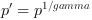

AcquisitionApplets Advanced User Documentation
Copyright © 2014 Silicon Software GmbH
Applet Characteristics
| Applet Name | FullLineGray8_10Tap |
| Applet Version | 2.1.0 |
| Type of Applet | AcquisitionApplets Advanced |
| Frame Grabber | microEnable IV VD4-CL/-PoCL |
| No. of Cameras | 1 |
| Camera Interface | Camera Link FULL Configuration |
| Sensor Type | Line Scan |
| Color | Grayscale |
| Processing Bit Depth | 8 Bit |
Table of Contents
- 1. Introduction
- 2. Software Interface
- 3. Camera Link
- 4. ROI
- 5. Sensor Correction
- 6. CC Signal Mapping
- 7. Line Trigger / Exsync
- 8. Image Trigger / Flash
- 9. Digital I/O
- 10. Overflow
- 11. Image Selector
- 12. Lookup Table
- 13. Processing
- 14. Output Format
- 15. Camera Simulator
- 16. Miscellaneous
- Glossary
- Index
This document provides detailed information on the Silicon Software AcquisitionApplets Advanced "FullLineGray8_10Tap" for microEnable IV VD4-CL/-PoCL frame grabbers. This document will outline the features and benefits of this AcquisitionApplets Advanced. Furthermore, the output formats and the software interface is explained. The main part of this document includes the detailed description of all applet modules and their parameters which make the AcquisitionApplets Advanced adaptable for numerous applications.
AcquisitionApplets Advanced "FullLineGray8_10Tap" is a single camera applet. The Camera Link camera interface can be configured for Camera Link cameras in Full-Configuration mode transferring grayscale pixels at a bit depth of 8 bits per pixel. A multi-functional line trigger is included to control the camera or external devices using grabber generated, external or software generated trigger pulses. Line scan cameras up to a width of 16384 pixels can be processed. The trigger system will generate images of a maximum height of 65535 pixels. The applet is processing data at a bit depth of 8 bits. An image selector at the camera port facilitates the selection of one image out of a parameterizable sequence of images. This enables the distribution of the images to multiple frame grabbers and PCs. The applet includes a sensor correction which sorts the taps of subsensors. Acquired images are buffered in frame grabber memory. A ROI can be selected for further processing. The stepsize of the ROI width is 16 pixel and the ROI stepsize for the image height is 1 lines. The full resolution lookup table can either be configured by using a user defined table or by using a processor. The processor gives the opportunity to use pre-defined functions such as offset, gain, and gamma to enhance the image quality.
Processed image data is output via a high speed DMA channel. The output pixel format is 8 bits per pixel.
The applet can easily be included into user applications using the Silicon Software runtime.
Table 1.1. Feature Summary of FullLineGray8_10Tap
| Feature | Applet Property |
|---|---|
| Applet Name |
FullLineGray8_10Tap |
| Type of Applet | AcquisitionApplets Advanced |
| Board | microEnable IV VD4-CL/-PoCL |
| No. of Cameras | 1 |
| Camera Type | Camera Link Full Configuration 8 Bit only (8 Tap 8 Bit, 10 Tap 8 Bit) |
| Sensor Type | Line Scan |
| Camera Format | Grayscale |
| Processing Bit Depth | 8 Bit |
| Sensor Correction / Tap Sorting | yes |
| Maximum Images Dimensions | 16384 * 65535 |
| ROI Stepsize | x: 16, y: 1 |
| Mirroring | no |
| Image Selector | Yes |
| Noise Filter | No |
| Shading Correction | No |
| Dead Pixel Interpolation | No |
| Bayer Filter | No |
| Color White Balancing | No |
| Lookup Table | Full Resolution |
| DMA | High Speed (DMA900) |
| DMA Image Output Format | Grayscale 8 bits |
| Event Generation | yes |
| Overflow Control | yes |
It is recommended to configure the functional blocks which are responsible for sensor correction first. This will be the camera settings, shading correction and dead pixel interpolation, if available. Afterwards, other image enhancement functional blocks can be configured, such as the white balancing, noise filter and lookup table.
The maximum bandwidths of applet FullLineGray8_10Tap are listed in the following table.
Table 1.2. Bandwidth of FullLineGray8_10Tap
| Description | Bandwidth |
|---|---|
| Max. CamClk | 85 MHz |
| Peak Bandwidth per Camera | 850 MPixel/s |
| Mean Bandwidth per Camera | 850 MPixel/s |
| DMA Bandwidth | 872 MByte/s (depends on PC mainboard) |
Max. CamClk refers to the maximum pixel clock frequency used by the the Camera Link camera. You can use any lower pixel clock frequency.
The peak bandwidth defines the maximum allowed bandwidth for each camera at the camera interface. When transferring data from the camera to the frame grabber at this bandwidth, the buffer on the frame grabber will fill up as the data can be buffered, but not being processed at that speed. The peak bandwidth is related to the Camera Link interface mode and pixel clock frequency. The product of the used Camera Link taps and the pixel frequency must not exceed the peak bandwidth.
The mean bandwidth per camera describes the maximum allowed mean bandwidth for each camera at the camera interface. It is the product of the framerate and the image pixels. For example, for a 1 Megapixel image and a framerate of 100 fps, the mean bandwidth will be 100 MPixel/s.
The required output bandwidth of an applet can differ from the input bandwidth. A region of interest (ROI) and the output format can change the required output bandwidth and the maximum mean bandwidth.
Regard the relation between MPixel/s and MByte/s. The MByte/s depends on the applet and the parameterization. 1 MByte is 1,000,000 Byte.
![[Note]](../../resources/images/note.png) | Bandwidth Varies |
|---|---|
|
The exact maximum DMA bandwidth depends on the used PC system. The camera bandwidth depends on the image size. The given values might vary. |
AcquisitionApplets Advanced "FullLineGray8_10Tap" supports one Camera Link camera in full configuration mode. The frame grabber has two Camera Link connectors. Connect the camera to port 'A' with its base connector and to port 'B' with its full connector.
Image transfer between the frame grabber and the PC is performed by DMA transfers. In this applet, only one DMA channel exists to transfer the image data. The DMA channel has index 0. The applet output format can be set with the parameters of the output format module. See Chapter 14, Output Format. All outputs are little endian coded.
![[Important]](../../resources/images/important.png) | DMA Image Tag |
|---|---|
|
The applet does not generate a valid DMA image tag ( |
The software interface is fully compatible to the Silicon Software runtime. Please read the SDK manual of the Silicon Software runtime software to understand how to include the microEnable frame grabbers and their applets into own applications.
The runtime includes functional SDK examples which use the features of the runtime. Most of these examples can be used with this AcquisitionApplets Advanced. These examples are very useful to learn on how to acquire images, set parameters and use events.
This document is focused on the explanation of the functionality and parameterization of the applet. The next chapter will list all parameters of this applet. Keep in mind that for multi-camera applets, parameters are can be set for all cameras individually. The sample source codes in parameterize the processing components of the first camera. The index in the source code examples has to be changed for the other cameras.
Amongest others, parameters of the applet are set and read using functions
- int Fg_setParameter(Fg_Struct *Fg, const int Parameter, const void *Value, const unsigned int index)
- int Fg_setParameterWithType(Fg_Struct *Fg, const int Parameter, const void *Value, const unsigned int index, const enum FgParamTypes type)
- int Fg_getParameter(Fg_Struct *Fg, int Parameter, void *Value, const unsigned int index)
- int Fg_getParameterWithType(Fg_Struct *Fg, const int Parameter, void *Value, const unsigned int index, const enum FgParamTypes type)
The index is used to address a DMA channel a camera index or a processing logic index. It is important to understand the relations between cameras, processes, parameters and DMA channels. This AcquisitionApplets Advanced is a single camera applet and is using only one DMA channel. All parameterizations are made using index 0 only.
For applets having multiple DMA channels for each camera, the relation between the indices is more complex. Please check the respective documentation of these applets for more details.
This AcquisitionApplets Advanced can be used with one line scan camera in Camera Link full configuration mode. To receive correct image data from your camera, it is crucial that the camera output format matches the selected frame grabber input format. The following parameters configure the grabber's camera interface to match with the individual camera properties. Most cameras support different operation modes. Please, consult the manual of your camera to obtain the necessary information, how to configure the camera to the desired data format.
Ensure that the lines transferred by the camera do not exceed the maximum allowed line length for this applet (16384).
This parameter specifies the data format of the connected camera.
This camera interface can be configured to support the different data formats specified by the Camera Link standard. In this AcquisitionApplets Advanced,the processing data bit depth is 8 bit. The camera interface automatically performs a conversion to the 8 bit format using bit shifting independently from the selected camera format. If the Camera Link bit depth is greater than the processing bit depth, bits will be right shifted to meet the internal bit depth. If the Camera Link bit depth is less than the processing bit depth, bits will be left shifted to meet the internal bit depth. In this case, the lower bits are fixed to zero.
Table 3.1. Parameter properties of FG_CAMERA_LINK_CAMTYPE
| Property | Value |
|---|---|
| Name | FG_CAMERA_LINK_CAMTYPE |
| Type | Enumeration |
| Access policy | Read/Write/Change |
| Storage policy | Persistent |
| Allowed values |
|
| Default value | FG_CL_FULL_10_TAP_8_BIT |
Example 3.1. Usage of FG_CAMERA_LINK_CAMTYPE
int result = 0; unsigned int value = FG_CL_FULL_10_TAP_8_BIT; const enum FgParamTypes type = FG_PARAM_TYPE_UINT32_T; if ((result = Fg_setParameterWithType(FG_CAMERA_LINK_CAMTYPE, &value, 0, type)) < 0) { /* error handling */ } if ((result = Fg_getParameterWithType(FG_CAMERA_LINK_CAMTYPE, &value, 0, type)) < 0) { /* error handling */ }
With this parameter it is possible to support cameras that do not fully comply with the Camera Link specification. If FG_YES is selected, DVAL, LVAL and FVAL is used to decode valid pixels. If the parameter is set to FG_NO, only LVAL and FVAL is used to decode valid pixels. If you are not sure about the required setting, keep the parameter's value at FG_YES.
Table 3.2. Parameter properties of FG_USEDVAL
| Property | Value |
|---|---|
| Name | FG_USEDVAL |
| Type | Enumeration |
| Access policy | Read/Write/Change |
| Storage policy | Persistent |
| Allowed values |
|
| Default value | FG_YES |
Example 3.2. Usage of FG_USEDVAL
int result = 0; unsigned int value = FG_YES; const enum FgParamTypes type = FG_PARAM_TYPE_UINT32_T; if ((result = Fg_setParameterWithType(FG_USEDVAL, &value, 0, type)) < 0) { /* error handling */ } if ((result = Fg_getParameterWithType(FG_USEDVAL, &value, 0, type)) < 0) { /* error handling */ }
This module allows the definition of a region of interest (ROI), also called area of interest (AOI).
A ROI allows the selection of a smaller subset pixel area from the input image.
It is defined by using parameters FG_XOFFSET, FG_WIDTH, FG_YOFFSET and FG_HEIGTH.
The following figure illustrates the parameters.
As can be seen, the region of interest lies within the input image dimensions. Thus, if the image dimension provided by the camera is grater or equal to the specified ROI parameters, the applet will fully cut-out the ROI subset pixel area. However, if the image provided by the camera is smaller than the specified ROI, lines will be filled with random pixel content and the image height might be cut or filled with random image lines as illustrated in the following.
Furthermore, mind that the image send by the camera must not exceed the maximum allowed image dimensions. This applet allows a maximum image width of 16384 pixels and a maximum image height of 65535 lines. The chosen ROI settings can have a direct influence on the maximum bandwidth of the applet as they define the image size and thus, define the amount of data.
The parameters have dynamic value ranges. For example an x-offset cannot be set if the sum of the offset and the image width will exceed the maximum image width. To set a high x-offset, the image width has to be reduced, first. Hence, the order of setting the parameters for this module is important. The return values of the function calls in the SDK should always be evaluated to check if changes were accepted.
Mind the minimum step size of the parameters. This applet has a minimum step size of 16 pixel for the width and the x-offset, while the step size for the height and the y-offset is 1.
The settings made in this module will define the display size and buffer size if the applet is used in microDisplay. If you use the applet in your own programs, ensure to define a sufficient buffer size for the DMA transfers in your PC memory.
All ROI parameters can only be changed if the acquisition is not started i.e. stopped.
| Camera ROI |
|---|---|
|
Most cameras allow the setting of a ROI inside the camera. The ROI settings described in this section are independent from the camera settings. |
| Influence on Bandwidth |
|---|---|
|
A ROI might cause a strong reduction of the required bandwidth. If possible, the camera frame dimension should be reduced directly in the camera to the desired size instead of reducing the size in the applet. This will reduce the required bandwidth between the camera and the frame grabber. |
The parameter specifies the width of the ROI. The values of parameters FG_WIDTH + FG_XOFFSET must not
exceed the maximum image width of 16384 pixels.
Table 4.1. Parameter properties of FG_WIDTH
| Property | Value |
|---|---|
| Name | FG_WIDTH |
| Type | Unsigned Integer |
| Access policy | Read/Write |
| Storage policy | Persistent |
| Allowed values |
|
| Default value | 16384 |
| Unit of measure | pixel |
Example 4.1. Usage of FG_WIDTH
int result = 0; unsigned int value = 16384; const enum FgParamTypes type = FG_PARAM_TYPE_UINT32_T; if ((result = Fg_setParameterWithType(FG_WIDTH, &value, 0, type)) < 0) { /* error handling */ } if ((result = Fg_getParameterWithType(FG_WIDTH, &value, 0, type)) < 0) { /* error handling */ }
The parameter specifies the height of the ROI. The values of parameters FG_HEIGHT + FG_YOFFSET must
not exceed the maximum image height of 65535 pixels.
Table 4.2. Parameter properties of FG_HEIGHT
| Property | Value |
|---|---|
| Name | FG_HEIGHT |
| Type | Unsigned Integer |
| Access policy | Read/Write |
| Storage policy | Persistent |
| Allowed values |
|
| Default value | 1024 |
| Unit of measure | pixel |
Example 4.2. Usage of FG_HEIGHT
int result = 0; unsigned int value = 1024; const enum FgParamTypes type = FG_PARAM_TYPE_UINT32_T; if ((result = Fg_setParameterWithType(FG_HEIGHT, &value, 0, type)) < 0) { /* error handling */ } if ((result = Fg_getParameterWithType(FG_HEIGHT, &value, 0, type)) < 0) { /* error handling */ }
The x-offset is defined by this parameter.
Table 4.3. Parameter properties of FG_XOFFSET
| Property | Value |
|---|---|
| Name | FG_XOFFSET |
| Type | Unsigned Integer |
| Access policy | Read/Write |
| Storage policy | Persistent |
| Allowed values |
|
| Default value | 0 |
| Unit of measure | pixel |
Example 4.3. Usage of FG_XOFFSET
int result = 0; unsigned int value = 0; const enum FgParamTypes type = FG_PARAM_TYPE_UINT32_T; if ((result = Fg_setParameterWithType(FG_XOFFSET, &value, 0, type)) < 0) { /* error handling */ } if ((result = Fg_getParameterWithType(FG_XOFFSET, &value, 0, type)) < 0) { /* error handling */ }
The y-offset is defined by this parameter.
Table 4.4. Parameter properties of FG_YOFFSET
| Property | Value |
|---|---|
| Name | FG_YOFFSET |
| Type | Unsigned Integer |
| Access policy | Read/Write |
| Storage policy | Persistent |
| Allowed values |
|
| Default value | 0 |
| Unit of measure | pixel |
Example 4.4. Usage of FG_YOFFSET
int result = 0; unsigned int value = 0; const enum FgParamTypes type = FG_PARAM_TYPE_UINT32_T; if ((result = Fg_setParameterWithType(FG_YOFFSET, &value, 0, type)) < 0) { /* error handling */ } if ((result = Fg_getParameterWithType(FG_YOFFSET, &value, 0, type)) < 0) { /* error handling */ }
Most camera sensors are read out sequentially in the so called raster scan format (line by line from top-left to bottom-right). However, to speed up the data transfer, some sensors can be configured to read out several pixels in parallel. As a result, succeeding pixels which are transferred via the Camera Link cable are not necessarily neighboring pixels. The sensor readout correction can re-order the pixels on board of the frame grabber and transform the grabbed image in the usual raster-scan fashion. All common readout strategies are supported to save computational power of the host system.
The sensor correction module in this AcquisitionApplets Advanced is configured by a set of parameters to perform the desired correction. Namely, the parameters are FG_SC_SENSORLENGTH, FG_SC_SUBSENSORCOUNT, FG_SC_TAPCOUNT, FG_SC_ROTATEDSENSOR, FG_SC_READOUTDIRECTION and FG_SC_PIXELORDER.
![[Tip]](../../resources/images/tip.png) | Use preset parameter FG_SENSORREADOUT |
|---|---|
|
Instead of using the parameters described above, one of the presets defined by |
-
FG_SC_SENSORLENGTH:
This parameter has to be set to the actual sensor length of the camera without any ROI or offset considerations defined in the applet. In the current version of this AcquisitionApplets Advanced, this parameter has no influence on the functionality and is included for compatibility reasons for future releases only.
-
FG_SC_SUBSENSORCOUNT:
The sensor of the camera is assumed to be divided into several subsensors. The number of these subsensors is set by this parameter. For this AcquisitionApplets Advanced this can either be 1 or 10
-
FG_SC_TAPCOUNT:
The number of taps, the camera uses to transfer the pixels is defined by this parameter. For this AcquisitionApplets Advanced this can either be 1 or 10
These taps are not related to the taps known from Camera Link transfers but the numer is equal in many cases.
-
FG_SC_ROTATEDSENSOR:
It is assumed that the subsensors of the camera will be read in a linear fashion e.g. first subsensor 0, next subsensor 1, next subsensor 2 and finally subsensor 3. It is not possible to read subsensors in a shuffled order such as 0, 2, 1, 3 for example. For some cameras, the sensor is read out in rotated order i.e. 3, 2, 1, 0. This can be defined by this parameter.
-
FG_SC_READOUTDIRECTION:
The read out direction defines the order to read out pixels out of a subsensor i.e. in forward = 0 or backward = 1 direction. This is a field parameter, where a value can be set for every subsensor.
-
FG_SC_PIXELORDER:
The pixel order defines the read out order of a pixel in a subsensor. This parameter only has effect if more than one tap is used to transfer the pixels of a subsensor. This is a field parameter, where a value can be set for every subsensor.
The following image will illustrate the functionality of the sensor correction parameters. In this example, the camera sensor has 4 subsensors and transfers data via Camera Link using 8 taps. As can be seen from the figure, the subsensors are read in linear order and start with subsensor 0 i.e. the whole sensor is not rotated. Subsensors 0 and 1 are read in forward direction and are not mirrored. However, subsensors 2 and 3 are read in backward direction. Furthermore, the pixel order is mirrored as subsensor 2 transfers the first i.e. even numbered pixels via tap "F' and the second i.e. odd numbered pixels via tap "E".
Note that the figure is an example only. This applet might have other configuration options.
Figure 5.1. Illustration of Sensor Correction Parameters and Functionality. Example only. This applet might differ.
Please consult the user manual of the camera manufacturer to get information about the camera specific
sensor read out.
The current implementation of this AcquisitionApplets Advanced does not allow any permutation of the parameters described above. The following table lists all allowed combinations.
|
FG_SC_SUBSENSORCOUNT no. of subsensors |
FG_SC_TAPCOUNT no. of taps |
FG_SC_ROTATEDSENSOR rotated sensor |
FG_SC_READOUTDIRECTION readout direction |
FG_SC_PIXELORDER pixel order |
old SC notation |
|---|---|---|---|---|---|
| 1 | 1 | no | forward | don't care | |-> | |
| 10 | 10 | false | forward, forward, forward, forward, forward, forward, forward, forward, forward, forward | don't care, don't care, don't care, don't care, don't care, don't care, don't care, don't care, don't care, don't care | |1> 2> 3> 4> 5> 6> 7> 8> 9> 10>| |
| 10 | 10 | true | forward, forward, forward, forward, forward, forward, forward, forward, forward, forward | don't care, don't care, don't care, don't care, don't care, don't care, don't care, don't care, don't care, don't care | |<10 <9 <8 <7 <6 <5 <4 <3 <2 <1 | |
After all settings have been made, the configuration is enabled by writing to parameter FG_SC_UPDATESCHEME. If the parameter settings are not correct or if they do not match with one of the sensor correction modes described in the tables, writing to this parameter will return an error code.
Select one of the presets to configure the sensor correction.
The selected preset will directly overwrite the other parameters which define the sensor correction.
Writing to parameter FG_SC_UPDATESCHEME it not required when a preset is used.
Table 5.1. Parameter properties of FG_SENSORREADOUT
| Property | Value |
|---|---|
| Name | FG_SENSORREADOUT |
| Type | Enumeration |
| Access policy | Read/Write/Change |
| Storage policy | Persistent |
| Allowed values |
|
| Default value | SMODE_UNCHANGED |
Example 5.1. Usage of FG_SENSORREADOUT
int result = 0; unsigned int value = SMODE_UNCHANGED; const enum FgParamTypes type = FG_PARAM_TYPE_UINT32_T; if ((result = Fg_setParameterWithType(FG_SENSORREADOUT, &value, 0, type)) < 0) { /* error handling */ } if ((result = Fg_getParameterWithType(FG_SENSORREADOUT, &value, 0, type)) < 0) { /* error handling */ }
Specify the number of subsensors by use of this parameter.
Don't forget to update any modifications to the applet using parameter FG_SC_UPDATESCHEME.
Table 5.2. Parameter properties of FG_SC_SUBSENSORCOUNT
| Property | Value |
|---|---|
| Name | FG_SC_SUBSENSORCOUNT |
| Type | Unsigned Integer |
| Access policy | Read/Write/Change |
| Storage policy | Persistent |
| Allowed values |
|
| Default value | 1 |
Example 5.2. Usage of FG_SC_SUBSENSORCOUNT
int result = 0; unsigned int value = 1; const enum FgParamTypes type = FG_PARAM_TYPE_UINT32_T; if ((result = Fg_setParameterWithType(FG_SC_SUBSENSORCOUNT, &value, 0, type)) < 0) { /* error handling */ } if ((result = Fg_getParameterWithType(FG_SC_SUBSENSORCOUNT, &value, 0, type)) < 0) { /* error handling */ }
This parameter is used for compatibility reasons and has no functionality in the current release of this AcquisitionApplets Advanced. Future versions will have extended sensor correction functionalities using this parameter.
Table 5.3. Parameter properties of FG_SC_SENSORLENGTH
| Property | Value |
|---|---|
| Name | FG_SC_SENSORLENGTH |
| Type | Unsigned Integer |
| Access policy | Read/Write/Change |
| Storage policy | Persistent |
| Allowed values |
|
| Default value | 16380 |
Example 5.3. Usage of FG_SC_SENSORLENGTH
int result = 0; unsigned int value = 16380; const enum FgParamTypes type = FG_PARAM_TYPE_UINT32_T; if ((result = Fg_setParameterWithType(FG_SC_SENSORLENGTH, &value, 0, type)) < 0) { /* error handling */ } if ((result = Fg_getParameterWithType(FG_SC_SENSORLENGTH, &value, 0, type)) < 0) { /* error handling */ }
The number of taps is defined by this parameter.
Don't forget to update any modifications to the applet using parameter FG_SC_UPDATESCHEME.
Table 5.4. Parameter properties of FG_SC_TAPCOUNT
| Property | Value |
|---|---|
| Name | FG_SC_TAPCOUNT |
| Type | Unsigned Integer |
| Access policy | Read/Write/Change |
| Storage policy | Persistent |
| Allowed values |
|
| Default value | 1 |
Example 5.4. Usage of FG_SC_TAPCOUNT
int result = 0; unsigned int value = 1; const enum FgParamTypes type = FG_PARAM_TYPE_UINT32_T; if ((result = Fg_setParameterWithType(FG_SC_TAPCOUNT, &value, 0, type)) < 0) { /* error handling */ } if ((result = Fg_getParameterWithType(FG_SC_TAPCOUNT, &value, 0, type)) < 0) { /* error handling */ }
Set this parameter to FG_TRUE if the camera has a rotated sensor.
Don't forget to update any modifications to the applet using parameter FG_SC_UPDATESCHEME.
Table 5.5. Parameter properties of FG_SC_ROTATEDSENSOR
| Property | Value |
|---|---|
| Name | FG_SC_ROTATEDSENSOR |
| Type | Enumeration |
| Access policy | Read/Write/Change |
| Storage policy | Persistent |
| Allowed values |
|
| Default value | FG_FALSE |
Example 5.5. Usage of FG_SC_ROTATEDSENSOR
int result = 0; unsigned int value = FG_FALSE; const enum FgParamTypes type = FG_PARAM_TYPE_UINT32_T; if ((result = Fg_setParameterWithType(FG_SC_ROTATEDSENSOR, &value, 0, type)) < 0) { /* error handling */ } if ((result = Fg_getParameterWithType(FG_SC_ROTATEDSENSOR, &value, 0, type)) < 0) { /* error handling */ }
This field parameter is used to set the readout direction for each subsensor. Value 0
represents option "forward" and value 1 represents option "backward".
Index 0 corresponds to subsensor 0. Index 1 corresponds to subsensor 1 etc.
Don't forget to update any modifications to the applet using parameter FG_SC_UPDATESCHEME.
Table 5.6. Parameter properties of FG_SC_READOUTDIRECTION
| Property | Value |
|---|---|
| Name | FG_SC_READOUTDIRECTION |
| Type | Unsigned Integer Field |
| Access policy | Read/Write/Change |
| Storage policy | Transient |
| Default value | 0 |
Example 5.6. Usage of FG_SC_READOUTDIRECTION
int result = 0; FieldParameterInt access; const enum FgParamTypes type = FG_PARAM_TYPE_STRUCT_FIELDPARAMINT; for (unsigned int i = 0; i < 10; ++i) { access.index = i; access.value = 0; if ((result = Fg_setParameterWithType(FG_SC_READOUTDIRECTION, &access, 0, type)) < 0) { /* error handling */ } if ((result = Fg_getParameterWithType(FG_SC_READOUTDIRECTION, &access, 0, type)) < 0) { /* error handling */ } }
The pixel order defines whether the camera's sub sensors are read in forward or in reverse direction.
Set the parameter to 0 for forward direction and 1 for reverse direction.
Don't forget to update any modifications to the applet using parameter FG_SC_UPDATESCHEME.
Table 5.7. Parameter properties of FG_SC_PIXELORDER
| Property | Value |
|---|---|
| Name | FG_SC_PIXELORDER |
| Type | Unsigned Integer Field |
| Access policy | Read/Write/Change |
| Storage policy | Transient |
| Default value | 0 |
Example 5.7. Usage of FG_SC_PIXELORDER
int result = 0; FieldParameterInt access; const enum FgParamTypes type = FG_PARAM_TYPE_STRUCT_FIELDPARAMINT; for (unsigned int i = 0; i < 10; ++i) { access.index = i; access.value = 0; if ((result = Fg_setParameterWithType(FG_SC_PIXELORDER, &access, 0, type)) < 0) { /* error handling */ } if ((result = Fg_getParameterWithType(FG_SC_PIXELORDER, &access, 0, type)) < 0) { /* error handling */ } }
After the sensor correction has been configured using the parameters described above, the actual configuration can be enabled in the frame grabber. Use this parameter to start verification of the settings made and transfer to the grabber. The parameter may only be changed while no acquisition is started.
If the parameter settings are not correct or if they do not match with one of the sensor correction modes described in the tables above, writing to this parameter will return an error code.
Table 5.8. Parameter properties of FG_SC_UPDATESCHEME
| Property | Value |
|---|---|
| Name | FG_SC_UPDATESCHEME |
| Type | Enumeration |
| Access policy | Read/Write/Change |
| Storage policy | Transient |
| Allowed values |
|
| Default value | FG_APPLY |
Example 5.8. Usage of FG_SC_UPDATESCHEME
int result = 0; unsigned int value = FG_APPLY; const enum FgParamTypes type = FG_PARAM_TYPE_UINT32_T; if ((result = Fg_setParameterWithType(FG_SC_UPDATESCHEME, &value, 0, type)) < 0) { /* error handling */ } if ((result = Fg_getParameterWithType(FG_SC_UPDATESCHEME, &value, 0, type)) < 0) { /* error handling */ }
The CameraLink interface specifies four camera input signals, i.e. CC1, CC2, CC3 and CC4. Usually the camera will use one particular CC-signal to trigger the data acquisition and define the exposure time. Please consult the vendor's manual of your camera to identify the required signals and their mapping to the CC1-CC4 signals.
This AcquisitionApplets Advanced provides eight different methods to map five source signals to any of the four CC-signal lines:
-
CC_EXSYNC
The ExSync signal is used to trigger the line acquisition of the camera. It can be generated periodically, or triggered by one of the eight trigger input signals. When generated periodically by the frame grabber (grabber controlled), it determines the framerate. Depending on the operation mode of the camera, its active-time can determine the exposure time. For details refer to the trigger section of this document.
-
CC_NOT_EXSYNC
The inverted signal to CC_EXSYNC.
-
CC_EXSYNC2
A delayed copy of line trigger ExSync is provided by ExSync2
-
CC_NOT_EXSYNC2
The inverted signal to ExSync2.
-
CC_STROBEPULSE
A delayed copy of the image trigger is provided by the flash. It has as separate delay and is usually used to control external flashes. For details refer to the Image Trigger System.
-
CC_NOT_STROBEPULSE
The inverted signal to CC_STROBEPULSE.
-
CC_GND
Ground
-
CC_VCC
VCC
Select one of the options described above.
Table 6.1. Parameter properties of FG_CCSEL0
| Property | Value |
|---|---|
| Name | FG_CCSEL0 |
| Type | Enumeration |
| Access policy | Read/Write/Change |
| Storage policy | Persistent |
| Allowed values |
|
| Default value | CC_EXSYNC |
Example 6.1. Usage of FG_CCSEL0
int result = 0; unsigned int value = CC_EXSYNC; const enum FgParamTypes type = FG_PARAM_TYPE_UINT32_T; if ((result = Fg_setParameterWithType(FG_CCSEL0, &value, 0, type)) < 0) { /* error handling */ } if ((result = Fg_getParameterWithType(FG_CCSEL0, &value, 0, type)) < 0) { /* error handling */ }
Select one of the options described above.
Table 6.2. Parameter properties of FG_CCSEL1
| Property | Value |
|---|---|
| Name | FG_CCSEL1 |
| Type | Enumeration |
| Access policy | Read/Write/Change |
| Storage policy | Persistent |
| Allowed values |
|
| Default value | CC_VCC |
Example 6.2. Usage of FG_CCSEL1
int result = 0; unsigned int value = CC_VCC; const enum FgParamTypes type = FG_PARAM_TYPE_UINT32_T; if ((result = Fg_setParameterWithType(FG_CCSEL1, &value, 0, type)) < 0) { /* error handling */ } if ((result = Fg_getParameterWithType(FG_CCSEL1, &value, 0, type)) < 0) { /* error handling */ }
Select one of the options described above.
Table 6.3. Parameter properties of FG_CCSEL2
| Property | Value |
|---|---|
| Name | FG_CCSEL2 |
| Type | Enumeration |
| Access policy | Read/Write/Change |
| Storage policy | Persistent |
| Allowed values |
|
| Default value | CC_VCC |
Example 6.3. Usage of FG_CCSEL2
int result = 0; unsigned int value = CC_VCC; const enum FgParamTypes type = FG_PARAM_TYPE_UINT32_T; if ((result = Fg_setParameterWithType(FG_CCSEL2, &value, 0, type)) < 0) { /* error handling */ } if ((result = Fg_getParameterWithType(FG_CCSEL2, &value, 0, type)) < 0) { /* error handling */ }
Select one of the options described above.
Table 6.4. Parameter properties of FG_CCSEL3
| Property | Value |
|---|---|
| Name | FG_CCSEL3 |
| Type | Enumeration |
| Access policy | Read/Write/Change |
| Storage policy | Persistent |
| Allowed values |
|
| Default value | CC_VCC |
Example 6.4. Usage of FG_CCSEL3
int result = 0; unsigned int value = CC_VCC; const enum FgParamTypes type = FG_PARAM_TYPE_UINT32_T; if ((result = Fg_setParameterWithType(FG_CCSEL3, &value, 0, type)) < 0) { /* error handling */ } if ((result = Fg_getParameterWithType(FG_CCSEL3, &value, 0, type)) < 0) { /* error handling */ }
The line trigger generates the Exsync and Exsync2 signals that are used to trigger the line acquisition of the specific camera. With the help of these signals it is possible to define the line frequency and exposure time. Since ExSync2 is just a copy of the Exsync with a user selectable delay, the following description will refer to "ExSync" only.
To use the ExSync signals for the application specific camera it is necessary to configure the camera accordingly. Furthermore the camera might expect the ExSync at a particular CC signal. Please consult the camera's manual for details.
Basically two different generation modes for the ExSync signals are available, a simple periodical and an externally triggered generation. Additionally, two variants are available, the first is independent from the image gate, and the second is gated by the image gate, which creates ExSync signals only during the actual acquisition.
Image gate independent ExSync modes:
-
Grabber Controlled
For the grabber controlled line trigger, the ExSync signal is a simple periodical signal. Its period defines the line frequency and its active time is used by many cameras to define the exposure time.
-
External Trigger
The external trigger mode for ExSync generates a single ExSync pulse when the external trigger source becomes active. Again, the ExSync is active for exposure time to define the exposure time for the camera. During the exposure time is not possible to re-trigger the ExSync. If the camera needs an additional setup time, it is possible to extend the deadtime of the trigger - the time where no re-trigger is possible - beyond the exposure time. If you want to trigger fewer lines than pulses available at the trigger input, it is possible to downscale the trigger input, e.g. a downscaler of 2 will generate an ExSync every 2nd input pulse, a downscaler of 3 only every third of the input pulses, and so on.
Image gate dependent ExSync modes:
-
Grabber Controlled Gated
For the grabber controlled gated line trigger, the ExSync signal is generated the very same way as for the grabber controlled mode described above. However, the generator for the ExSync is starting the rising image gate and stops with the image gate becoming inactive. This gives a smaller jitter for the time from the start of the image gate and the generation of the first ExSync, especially for very long ExSync periods.
-
External Trigger Gated
For the external trigger gated controlled line trigger, the ExSync signal is generated the very same way as for the external trigger mode described above. However, the generator for the ExSync is starting the rising image gate and stops with the image gate becoming inactive. For this mode two downscalers are available. The first is the downscaler from the beginning of the image gate to the first ExSync, it is called phase. The second is downscaling all succeeding input triggers and is the same as the downscaler used in external trigger mode described above. The options downscale and phase allow further adjustment of the camera trigger with respect to its external source, the trigger input. The value downscale determines the divisor of the input frequency, e.g. a downscale of 16 will produce an ExSync every 16 * n of the input trigger. Furthermore, the phase gives the possibility to shift the camera trigger. A phase shift of 90° is achieved when setting phase to 4, which produces a camera trigger at times 16 * n + 4 of the input trigger signal.
Please choose one of the line trigger modes described above. Make sure that the operation modes of the frame grabber and the camera is the same.
Table 7.1. Parameter properties of FG_LINETRIGGERMODE
| Property | Value |
|---|---|
| Name | FG_LINETRIGGERMODE |
| Type | Enumeration |
| Access policy | Read/Write/Change |
| Storage policy | Persistent |
| Allowed values |
|
| Default value | GRABBER_CONTROLLED |
Example 7.1. Usage of FG_LINETRIGGERMODE
int result = 0; unsigned int value = GRABBER_CONTROLLED; const enum FgParamTypes type = FG_PARAM_TYPE_UINT32_T; if ((result = Fg_setParameterWithType(FG_LINETRIGGERMODE, &value, 0, type)) < 0) { /* error handling */ } if ((result = Fg_getParameterWithType(FG_LINETRIGGERMODE, &value, 0, type)) < 0) { /* error handling */ }
The ExSync generation can be enabled by using this parameter.
Please remember to first start the acquisition before setting the ExSyncOn parameter to On (FG_ON). The signal will be sent as soon as the ExSync has been started. Please make sure to set the ExSync parameter within the time that is set to the timeout parameter.
Table 7.2. Parameter properties of FG_EXSYNCON
| Property | Value |
|---|---|
| Name | FG_EXSYNCON |
| Type | Enumeration |
| Access policy | Read/Write/Change |
| Storage policy | Persistent |
| Allowed values |
|
| Default value | FG_ON |
Example 7.2. Usage of FG_EXSYNCON
int result = 0; unsigned int value = FG_ON; const enum FgParamTypes type = FG_PARAM_TYPE_UINT32_T; if ((result = Fg_setParameterWithType(FG_EXSYNCON, &value, 0, type)) < 0) { /* error handling */ } if ((result = Fg_getParameterWithType(FG_EXSYNCON, &value, 0, type)) < 0) { /* error handling */ }
In the line trigger input category of the line trigger module, the applet is configured for a possible external line trigger input. Here, debouncing times, downscales, polarities and a shaft encoder input are configured.
This parameter specifies the signal source, which is used to trigger the Exsync signal generator. If a shaft encoder is used, configure source B, too. Please check the hardware documentation of the microEnable board to find out the pins of the connector corresponding to the selection made.
Table 7.3. Parameter properties of FG_LINETRIGGERINSRC
| Property | Value |
|---|---|
| Name | FG_LINETRIGGERINSRC |
| Type | Enumeration |
| Access policy | Read/Write/Change |
| Storage policy | Persistent |
| Allowed values |
|
| Default value | TRGINSRC_1 |
Example 7.3. Usage of FG_LINETRIGGERINSRC
int result = 0; unsigned int value = TRGINSRC_1; const enum FgParamTypes type = FG_PARAM_TYPE_UINT32_T; if ((result = Fg_setParameterWithType(FG_LINETRIGGERINSRC, &value, 0, type)) < 0) { /* error handling */ } if ((result = Fg_getParameterWithType(FG_LINETRIGGERINSRC, &value, 0, type)) < 0) { /* error handling */ }
The parameter defines the polarity of the external input trigger signal Source A and Source B. When set to low, the Exsync generator starts on a falling edge of the input signal. Otherwise, the Exsync generation starts on a rising edge.
Table 7.4. Parameter properties of FG_LINETRIGGERINPOLARITY
| Property | Value |
|---|---|
| Name | FG_LINETRIGGERINPOLARITY |
| Type | Enumeration |
| Access policy | Read/Write/Change |
| Storage policy | Persistent |
| Allowed values |
|
| Default value | FG_ZERO |
Example 7.4. Usage of FG_LINETRIGGERINPOLARITY
int result = 0; unsigned int value = FG_ZERO; const enum FgParamTypes type = FG_PARAM_TYPE_UINT32_T; if ((result = Fg_setParameterWithType(FG_LINETRIGGERINPOLARITY, &value, 0, type)) < 0) { /* error handling */ } if ((result = Fg_getParameterWithType(FG_LINETRIGGERINPOLARITY, &value, 0, type)) < 0) { /* error handling */ }
Sets the value of how often the frequency of the input trigger signal has to be divided. For example, a value of 16 creates an ExSync pulse at each 16th input trigger signal.
Table 7.5. Parameter properties of FG_LINE_DOWNSCALE
| Property | Value |
|---|---|
| Name | FG_LINE_DOWNSCALE |
| Type | Unsigned Integer |
| Access policy | Read/Write |
| Storage policy | Persistent |
| Allowed values |
|
| Default value | 1 |
| Unit of measure | pulses |
Example 7.5. Usage of FG_LINE_DOWNSCALE
int result = 0; unsigned int value = 1; const enum FgParamTypes type = FG_PARAM_TYPE_UINT32_T; if ((result = Fg_setParameterWithType(FG_LINE_DOWNSCALE, &value, 0, type)) < 0) { /* error handling */ } if ((result = Fg_getParameterWithType(FG_LINE_DOWNSCALE, &value, 0, type)) < 0) { /* error handling */ }
In addition to the downscale value this parameter sets a phase position. To turn the phase position to about 90°, a value of 4 has to be chosen. In this case (take a look at "Downscale") the ExSync signals will be created at each 16 * n + 4 trigger signal.
Table 7.6. Parameter properties of FG_LINE_DOWNSCALEINIT
| Property | Value |
|---|---|
| Name | FG_LINE_DOWNSCALEINIT |
| Type | Unsigned Integer |
| Access policy | Read/Write |
| Storage policy | Persistent |
| Allowed values |
|
| Default value | 1 |
| Unit of measure | pulses |
Example 7.6. Usage of FG_LINE_DOWNSCALEINIT
int result = 0; unsigned int value = 1; const enum FgParamTypes type = FG_PARAM_TYPE_UINT32_T; if ((result = Fg_setParameterWithType(FG_LINE_DOWNSCALEINIT, &value, 0, type)) < 0) { /* error handling */ } if ((result = Fg_getParameterWithType(FG_LINE_DOWNSCALEINIT, &value, 0, type)) < 0) { /* error handling */ }
With the support of signal A/B for shaft encoders it is possible to detect the rotary direction of an attached encoder and filter the encoder signals accordingly. Also a compensation is performed for up to 16,777,216 reverse encoder signals. A brief description about this feature is found in the shaft encoder documentation.
Switch the shaft encoder filter on or off. By enabling the shaft encoder, a reset of the encoder compensation is performed. Therefore, disable and enable the shaft encoder to reset the reverse compensation.
Table 7.7. Parameter properties of FG_SHAFTENCODERON
| Property | Value |
|---|---|
| Name | FG_SHAFTENCODERON |
| Type | Enumeration |
| Access policy | Read/Write/Change |
| Storage policy | Persistent |
| Allowed values |
|
| Default value | FG_OFF |
Example 7.7. Usage of FG_SHAFTENCODERON
int result = 0; unsigned int value = FG_OFF; const enum FgParamTypes type = FG_PARAM_TYPE_UINT32_T; if ((result = Fg_setParameterWithType(FG_SHAFTENCODERON, &value, 0, type)) < 0) { /* error handling */ } if ((result = Fg_getParameterWithType(FG_SHAFTENCODERON, &value, 0, type)) < 0) { /* error handling */ }
The shaft encoder filter can be run in three operation modes. Please choose the according operation mode which compatible to the connected shaft encoder. The following modes are available:
-
Filter x1
Exsync is generated for a forward rotation of the shaft encoder in single resolution, i.e. a trigger pulse for rising edge of Source A.
-
Filter x2
Exsync is generated for a forward rotation of the shaft encoder in double resolution, i.e. a trigger pulse for a rising edge of Source A and a rising edge of Source B.
-
Filter x4
Exsync is generated for a forward rotation of the shaft encoder in quad resolution, i.e. a trigger pulse for a rising and falling edge of Source A and a rising and falling edge of Source B.
Table 7.8. Parameter properties of FG_SHAFTENCODERMODE
| Property | Value |
|---|---|
| Name | FG_SHAFTENCODERMODE |
| Type | Enumeration |
| Access policy | Read/Write/Change |
| Storage policy | Persistent |
| Allowed values |
|
| Default value | FILTER_X1 |
Example 7.8. Usage of FG_SHAFTENCODERMODE
int result = 0; unsigned int value = FILTER_X1; const enum FgParamTypes type = FG_PARAM_TYPE_UINT32_T; if ((result = Fg_setParameterWithType(FG_SHAFTENCODERMODE, &value, 0, type)) < 0) { /* error handling */ } if ((result = Fg_getParameterWithType(FG_SHAFTENCODERMODE, &value, 0, type)) < 0) { /* error handling */ }
Specifies the input signal source B of the shaft encoder filter. Please check the hardware documentation of the microEnable board to find out the pins of the connector corresponding to the selection made.
Table 7.9. Parameter properties of FG_SHAFTENCODERINSRC
| Property | Value |
|---|---|
| Name | FG_SHAFTENCODERINSRC |
| Type | Enumeration |
| Access policy | Read/Write/Change |
| Storage policy | Persistent |
| Allowed values |
|
| Default value | TRGINSRC_2 |
Example 7.9. Usage of FG_SHAFTENCODERINSRC
int result = 0; unsigned int value = TRGINSRC_2; const enum FgParamTypes type = FG_PARAM_TYPE_UINT32_T; if ((result = Fg_setParameterWithType(FG_SHAFTENCODERINSRC, &value, 0, type)) < 0) { /* error handling */ } if ((result = Fg_getParameterWithType(FG_SHAFTENCODERINSRC, &value, 0, type)) < 0) { /* error handling */ }
This parameter defines the leading signal (=direction) of the shaft encoder filter.
Table 7.10. Parameter properties of FG_SHAFTENCODERLEADING
| Property | Value |
|---|---|
| Name | FG_SHAFTENCODERLEADING |
| Type | Enumeration |
| Access policy | Read/Write/Change |
| Storage policy | Persistent |
| Allowed values |
|
| Default value | SOURCE_A |
Example 7.10. Usage of FG_SHAFTENCODERLEADING
int result = 0; unsigned int value = SOURCE_A; const enum FgParamTypes type = FG_PARAM_TYPE_UINT32_T; if ((result = Fg_setParameterWithType(FG_SHAFTENCODERLEADING, &value, 0, type)) < 0) { /* error handling */ } if ((result = Fg_getParameterWithType(FG_SHAFTENCODERLEADING, &value, 0, type)) < 0) { /* error handling */ }
This category includes parameters to specify and parameterize the generated ExSync output signals.
This parameter specifies the period of the ExSync signal. Therefore, it defines the line frequency when using the grabber controlled mode to trigger the connected camera.
Table 7.11. Parameter properties of FG_LINEPERIODE
| Property | Value |
|---|---|
| Name | FG_LINEPERIODE |
| Type | Double |
| Access policy | Read/Write/Change |
| Storage policy | Persistent |
| Allowed values |
|
| Default value | 200.0 |
| Unit of measure | µs |
Example 7.11. Usage of FG_LINEPERIODE
int result = 0; double value = 200.0; const enum FgParamTypes type = FG_PARAM_TYPE_DOUBLE; if ((result = Fg_setParameterWithType(FG_LINEPERIODE, &value, 0, type)) < 0) { /* error handling */ } if ((result = Fg_getParameterWithType(FG_LINEPERIODE, &value, 0, type)) < 0) { /* error handling */ }
This parameter specifies the pulse width of the ExSync signal, which can be used by many cameras to specify the exposure time. It is possible to adjust the exposure time via software, even while grabbing. The value is set in microseconds and may not exceed the period time of the ExSync.
Table 7.12. Parameter properties of FG_LINEEXPOSURE
| Property | Value |
|---|---|
| Name | FG_LINEEXPOSURE |
| Type | Double |
| Access policy | Read/Write/Change |
| Storage policy | Persistent |
| Allowed values |
|
| Default value | 19.0 |
| Unit of measure | µs |
Example 7.12. Usage of FG_LINEEXPOSURE
int result = 0; double value = 19.0; const enum FgParamTypes type = FG_PARAM_TYPE_DOUBLE; if ((result = Fg_setParameterWithType(FG_LINEEXPOSURE, &value, 0, type)) < 0) { /* error handling */ } if ((result = Fg_getParameterWithType(FG_LINEEXPOSURE, &value, 0, type)) < 0) { /* error handling */ }
The parameter adjusts the polarity of the ExSync signal generator. Use Low Active, if the camera opens the shutter on a falling edge, otherwise use High Active.
Table 7.13. Parameter properties of FG_EXSYNCPOLARITY
| Property | Value |
|---|---|
| Name | FG_EXSYNCPOLARITY |
| Type | Enumeration |
| Access policy | Read/Write/Change |
| Storage policy | Persistent |
| Allowed values |
|
| Default value | FG_ONE |
Example 7.13. Usage of FG_EXSYNCPOLARITY
int result = 0; unsigned int value = FG_ONE; const enum FgParamTypes type = FG_PARAM_TYPE_UINT32_T; if ((result = Fg_setParameterWithType(FG_EXSYNCPOLARITY, &value, 0, type)) < 0) { /* error handling */ } if ((result = Fg_getParameterWithType(FG_EXSYNCPOLARITY, &value, 0, type)) < 0) { /* error handling */ }
This parameter specifies the delay between the generated ExSync and Exsync2 signals with respect to an external trigger input. Therefore, the Exsync2 signal is a delayed clone of the ExSync (polarity, period, etc. are the same as for ExSync).
Table 7.14. Parameter properties of FG_LINETRIGGERDELAY
| Property | Value |
|---|---|
| Name | FG_LINETRIGGERDELAY |
| Type | Double |
| Access policy | Read/Write/Change |
| Storage policy | Persistent |
| Allowed values |
|
| Default value | 0.0 |
| Unit of measure | µs |
Example 7.14. Usage of FG_LINETRIGGERDELAY
int result = 0; double value = 0.0; const enum FgParamTypes type = FG_PARAM_TYPE_DOUBLE; if ((result = Fg_setParameterWithType(FG_LINETRIGGERDELAY, &value, 0, type)) < 0) { /* error handling */ } if ((result = Fg_getParameterWithType(FG_LINETRIGGERDELAY, &value, 0, type)) < 0) { /* error handling */ }
The image trigger for line-scan cameras is in charge to generate an internal signal called image gate. Lines sent by the camera are only accepted if this image gate is active = open. Therefore, with help of the Image Gate it is possible to define frames by grouping all lines that belong to the same image gate into one frame.
This AcquisitionApplets Advanced supports three distinct operation modes of the image trigger:
-
Free run
In free run mode the image gate basically remains active all time. Therefore, all lines sent by the camera are grabbed. Moreover, it cuts the input lines into frames of the height specified by parameter
FG_HEIGHTof the display module. Also, offsets defined byFG_YOFFSETare covered and removed from the camera transfers for each image. -
Async Trigger
For the external trigger mode of the image trigger, the image gate is inactive = closed until an external trigger signal activates the image gate for
FG_HEIGHT+FG_YOFFSETlines. Therefore, for each external trigger event, the frame grabber records a frame of the specified height. -
Async Trigger Multi Buffer
For the external trigger mode of the image trigger, the image gate is inactive = closed until an external trigger signal activates the image gate. In contrast to the Async Trigger mode, the gate is open for
FG_IMGTRIGGER_ASYNC_HEIGHTlines while this image is split into smaller chunks ofFG_HEIGHTlines. Therefore, for each external trigger event, the frame grabber records a frame of a large specified height and split the large image into smaller chunks. The purpose of the mode is to start processing in PC while the image is still recorded.The parameter value of
FG_YOFFSETis without influence in this mode. -
Gated, Trigger
For the external gated mode of the image trigger, the image gate is active as long as the external trigger source is active, but is becoming inactive when
FG_HEIGHT+FG_YOFFSETlines have been grabbed. Therefore, during an external trigger phase the frame grabber records a frame with a height depending on the duration of active time of the external trigger signal, but is not exceeding an image height ofFG_HEIGHT+FG_YOFFSETlines. -
Gated Multi Buffer, Triggered
Equal to the 'Gated Trigger' mode, for the 'Gated Multi Buffer Trigger' the image gate is active as long as the external trigger source is active. In contrast, it does not limit the height to
FG_HEIGHTlines. It will cut the image afterFG_HEIGHTlines and start a new frame. Thus, for each gate, multiple frames are generated when a gate is active for more lines than defined byFG_HEIGHT.All images of a generated sequence will have a height of
FG_HEIGHTlines. However, the last image of each sequence might have a lower number of lines in the image.To detect the last image of a sequence in your software. Parameter
FG_IMAGE_TAGcan be used. This parameter is of type unsigned 32 bit integer. The most significant bit i.e. bit 31 includes a flag which is set to one if the respective image is the last image of a multi buffer sequence.uint32_t imageTag = 0; int returnCode = Fg_getParameterEx(fg, FG_IMAGE_TAG, &imageTag, 0, pmem0, imageNumber); bool isLastImageOfSequence = imageTagRAW >> 31;
All other bits of parameter
FG_IMAGE_TAGare fixed to value 0. The image tag parameter does not output the image number as available for older AcquisitionApplets.Note that the value of parameter
FG_YOFFSETis not considered if the 'Gated Multi Buffer Trigger' mode is used. An YOffset cannot be set in the applet.
Choose one of the image trigger modes described above. Please make sure that the operation mode of frame grabber and camera is the same.
Table 8.1. Parameter properties of FG_IMGTRIGGERMODE
| Property | Value |
|---|---|
| Name | FG_IMGTRIGGERMODE |
| Type | Enumeration |
| Access policy | Read/Write/Change |
| Storage policy | Persistent |
| Allowed values |
|
| Default value | FREE_RUN |
Example 8.1. Usage of FG_IMGTRIGGERMODE
int result = 0; unsigned int value = FREE_RUN; const enum FgParamTypes type = FG_PARAM_TYPE_UINT32_T; if ((result = Fg_setParameterWithType(FG_IMGTRIGGERMODE, &value, 0, type)) < 0) { /* error handling */ } if ((result = Fg_getParameterWithType(FG_IMGTRIGGERMODE, &value, 0, type)) < 0) { /* error handling */ }
The generation of image triggers can be switched on or off by use of this parameter. When the image trigger is disabled and the image trigger is not running in free-run mode, the image acquisition is terminated. If the image trigger is enabled, the acquisition will start immediately.
Table 8.2. Parameter properties of FG_IMGTRIGGERON
| Property | Value |
|---|---|
| Name | FG_IMGTRIGGERON |
| Type | Enumeration |
| Access policy | Read/Write/Change |
| Storage policy | Persistent |
| Allowed values |
|
| Default value | FG_ON |
Example 8.2. Usage of FG_IMGTRIGGERON
int result = 0; unsigned int value = FG_ON; const enum FgParamTypes type = FG_PARAM_TYPE_UINT32_T; if ((result = Fg_setParameterWithType(FG_IMGTRIGGERON, &value, 0, type)) < 0) { /* error handling */ } if ((result = Fg_getParameterWithType(FG_IMGTRIGGERON, &value, 0, type)) < 0) { /* error handling */ }
To enable the flash output use this parameter.
Table 8.3. Parameter properties of FG_FLASHON
| Property | Value |
|---|---|
| Name | FG_FLASHON |
| Type | Enumeration |
| Access policy | Read/Write/Change |
| Storage policy | Persistent |
| Allowed values |
|
| Default value | FG_ON |
Example 8.3. Usage of FG_FLASHON
int result = 0; unsigned int value = FG_ON; const enum FgParamTypes type = FG_PARAM_TYPE_UINT32_T; if ((result = Fg_setParameterWithType(FG_FLASHON, &value, 0, type)) < 0) { /* error handling */ } if ((result = Fg_getParameterWithType(FG_FLASHON, &value, 0, type)) < 0) { /* error handling */ }
This parameter only has influcence in the image trigger mode FG_IMGTRIGGERMODE Async Trigger Multi Frame ASYNC_TRIGGER_MULTIFRAME.
The value is used to define the image height of the frame after the trigger pulse.
Whereas parameter FG_HEIGHT defines the chunk height.
If the value of FG_IMGTRIGGER_ASYNC_HEIGHT is less than FG_HEIGHT, the frame is not split into multiple frames an
will result in a smaller output frame.
Table 8.4. Parameter properties of FG_IMGTRIGGER_ASYNC_HEIGHT
| Property | Value |
|---|---|
| Name | FG_IMGTRIGGER_ASYNC_HEIGHT |
| Type | Unsigned Integer |
| Access policy | Read/Write/Change |
| Storage policy | Persistent |
| Allowed values |
|
| Default value | 1024 |
| Unit of measure | lines |
Example 8.4. Usage of FG_IMGTRIGGER_ASYNC_HEIGHT
int result = 0; unsigned int value = 1024; const enum FgParamTypes type = FG_PARAM_TYPE_UINT32_T; if ((result = Fg_setParameterWithType(FG_IMGTRIGGER_ASYNC_HEIGHT, &value, 0, type)) < 0) { /* error handling */ } if ((result = Fg_getParameterWithType(FG_IMGTRIGGER_ASYNC_HEIGHT, &value, 0, type)) < 0) { /* error handling */ }
The image trigger is busy if the current requested frame from the camera has not been completely transferred to the grabber. This parameter can be used to check if the camera can accept a new software trigger pulse.
Table 8.5. Parameter properties of FG_IMGTRIGGER_IS_BUSY
| Property | Value |
|---|---|
| Name | FG_IMGTRIGGER_IS_BUSY |
| Type | Enumeration |
| Access policy | Read-Only |
| Storage policy | Transient |
| Allowed values |
|
Example 8.5. Usage of FG_IMGTRIGGER_IS_BUSY
int result = 0; unsigned int value = IS_NOT_BUSY; const enum FgParamTypes type = FG_PARAM_TYPE_UINT32_T; if ((result = Fg_getParameterWithType(FG_IMGTRIGGER_IS_BUSY, &value, 0, type)) < 0) { /* error handling */ }
This category includes parameters to specify and control the image trigger inputs. The input can either be input pins of the frame grabber's trigger connector or trigger pulses generated by software register accesses.
This parameter specifies the signal source, which is used to trigger the image acquisition gate. If a software image trigger has to be used select option TRG_IN_SOURCE_SOFTWARE.
Table 8.6. Parameter properties of FG_IMGTRIGGERINSRC
| Property | Value |
|---|---|
| Name | FG_IMGTRIGGERINSRC |
| Type | Enumeration |
| Access policy | Read/Write/Change |
| Storage policy | Persistent |
| Allowed values |
|
| Default value | TRGINSRC_0 |
Example 8.6. Usage of FG_IMGTRIGGERINSRC
int result = 0; unsigned int value = TRGINSRC_0; const enum FgParamTypes type = FG_PARAM_TYPE_UINT32_T; if ((result = Fg_setParameterWithType(FG_IMGTRIGGERINSRC, &value, 0, type)) < 0) { /* error handling */ } if ((result = Fg_getParameterWithType(FG_IMGTRIGGERINSRC, &value, 0, type)) < 0) { /* error handling */ }
The parameter defines the polarity of the external input trigger signal.
Table 8.7. Parameter properties of FG_IMGTRIGGERINPOLARITY
| Property | Value |
|---|---|
| Name | FG_IMGTRIGGERINPOLARITY |
| Type | Enumeration |
| Access policy | Read/Write/Change |
| Storage policy | Persistent |
| Allowed values |
|
| Default value | FG_ZERO |
Example 8.7. Usage of FG_IMGTRIGGERINPOLARITY
int result = 0; unsigned int value = FG_ZERO; const enum FgParamTypes type = FG_PARAM_TYPE_UINT32_T; if ((result = Fg_setParameterWithType(FG_IMGTRIGGERINPOLARITY, &value, 0, type)) < 0) { /* error handling */ } if ((result = Fg_getParameterWithType(FG_IMGTRIGGERINPOLARITY, &value, 0, type)) < 0) { /* error handling */ }
With this parameter, a delay of lines can be configured before the activation of the image gate. This delays the start of the image acquisition. The parameter y-offest (as in free run mode) rejects the first lines from the camera. Delay and y-offset seem to have the same effect, however the difference is, that y-offset doesn't affect the image gate, which is relevant while using the gated line trigger mode.
Table 8.8. Parameter properties of FG_IMGTRIGGERGATEDELAY
| Property | Value |
|---|---|
| Name | FG_IMGTRIGGERGATEDELAY |
| Type | Unsigned Integer |
| Access policy | Read/Write |
| Storage policy | Persistent |
| Allowed values |
|
| Default value | 0 |
| Unit of measure | lines |
Example 8.8. Usage of FG_IMGTRIGGERGATEDELAY
int result = 0; unsigned int value = 0; const enum FgParamTypes type = FG_PARAM_TYPE_UINT32_T; if ((result = Fg_setParameterWithType(FG_IMGTRIGGERGATEDELAY, &value, 0, type)) < 0) { /* error handling */ } if ((result = Fg_getParameterWithType(FG_IMGTRIGGERGATEDELAY, &value, 0, type)) < 0) { /* error handling */ }
This parameter specifies the debouncing time the input image trigger signal must keep the same value to be detected as such. Fast signal changes within the debounce time will be filtered out.
Table 8.9. Parameter properties of FG_IMGTRIGGERDEBOUNCING
| Property | Value |
|---|---|
| Name | FG_IMGTRIGGERDEBOUNCING |
| Type | Double |
| Access policy | Read/Write/Change |
| Storage policy | Persistent |
| Allowed values |
|
| Default value | 0.112 |
| Unit of measure | µs |
Example 8.9. Usage of FG_IMGTRIGGERDEBOUNCING
int result = 0; double value = 0.112; const enum FgParamTypes type = FG_PARAM_TYPE_DOUBLE; if ((result = Fg_setParameterWithType(FG_IMGTRIGGERDEBOUNCING, &value, 0, type)) < 0) { /* error handling */ } if ((result = Fg_getParameterWithType(FG_IMGTRIGGERDEBOUNCING, &value, 0, type)) < 0) { /* error handling */ }
This parameter specifies the delay of the generated flash signal with respect to an external trigger input. Therefore, it is possible to synchronize the flash to the external trigger input. The delay is set in image line ticks.
Table 8.10. Parameter properties of FG_STROBEPULSEDELAY
| Property | Value |
|---|---|
| Name | FG_STROBEPULSEDELAY |
| Type | Unsigned Integer |
| Access policy | Read/Write |
| Storage policy | Persistent |
| Allowed values |
|
| Default value | 0 |
| Unit of measure | lines |
Example 8.10. Usage of FG_STROBEPULSEDELAY
int result = 0; unsigned int value = 0; const enum FgParamTypes type = FG_PARAM_TYPE_UINT32_T; if ((result = Fg_setParameterWithType(FG_STROBEPULSEDELAY, &value, 0, type)) < 0) { /* error handling */ } if ((result = Fg_getParameterWithType(FG_STROBEPULSEDELAY, &value, 0, type)) < 0) { /* error handling */ }
For the image trigger it is possible to use a software generated trigger signal to replace the external trigger input.
The software trigger control modules allows the to either generate a software trigger pulse or allows to set the state of the software trigger signal to generate a gate i.e. for gated image trigger mode.
A software trigger pulse can be sent by use of this parameter.
Table 8.11. Parameter properties of FG_SENDSOFTWARETRIGGER
| Property | Value |
|---|---|
| Name | FG_SENDSOFTWARETRIGGER |
| Type | Enumeration |
| Access policy | Read/Write/Change |
| Storage policy | Transient |
| Allowed values |
|
| Default value | FG_APPLY |
Example 8.11. Usage of FG_SENDSOFTWARETRIGGER
int result = 0; unsigned int value = FG_APPLY; const enum FgParamTypes type = FG_PARAM_TYPE_UINT32_T; if ((result = Fg_setParameterWithType(FG_SENDSOFTWARETRIGGER, &value, 0, type)) < 0) { /* error handling */ } if ((result = Fg_getParameterWithType(FG_SENDSOFTWARETRIGGER, &value, 0, type)) < 0) { /* error handling */ }
The software trigger state can be set to zero = low or one = high.
Table 8.12. Parameter properties of FG_SETSOFTWARETRIGGER
| Property | Value |
|---|---|
| Name | FG_SETSOFTWARETRIGGER |
| Type | Enumeration |
| Access policy | Read/Write/Change |
| Storage policy | Persistent |
| Allowed values |
|
| Default value | FG_ZERO |
Example 8.12. Usage of FG_SETSOFTWARETRIGGER
int result = 0; unsigned int value = FG_ZERO; const enum FgParamTypes type = FG_PARAM_TYPE_UINT32_T; if ((result = Fg_setParameterWithType(FG_SETSOFTWARETRIGGER, &value, 0, type)) < 0) { /* error handling */ } if ((result = Fg_getParameterWithType(FG_SETSOFTWARETRIGGER, &value, 0, type)) < 0) { /* error handling */ }
The polarity of the generated flash signal can be changed with this parameter.
Table 8.13. Parameter properties of FG_FLASH_POLARITY
| Property | Value |
|---|---|
| Name | FG_FLASH_POLARITY |
| Type | Enumeration |
| Access policy | Read/Write/Change |
| Storage policy | Persistent |
| Allowed values |
|
| Default value | FG_ONE |
Example 8.13. Usage of FG_FLASH_POLARITY
int result = 0; unsigned int value = FG_ONE; const enum FgParamTypes type = FG_PARAM_TYPE_UINT32_T; if ((result = Fg_setParameterWithType(FG_FLASH_POLARITY, &value, 0, type)) < 0) { /* error handling */ } if ((result = Fg_getParameterWithType(FG_FLASH_POLARITY, &value, 0, type)) < 0) { /* error handling */ }
The frame grabber provides eight digital input and digital outputs.
The current state of the digital inputs can be obtained using parameter FG_DIGIO_INPUT.
The outputs are used by the trigger module. See the corresponding sections.
However, outputs 3 and 7 can be arbitrarily set 0 or 1 using parameter FG_DIGIO_OUTPUT.
Besides reading the current state by parameters, events can be used for notification on changes.
Set the output value of outputs 3 and 7 using this parameter. Bit 0 of the parameter refers to the value at output 3, while bit 1 refers to output 7.
Table 9.1. Parameter properties of FG_DIGIO_OUTPUT
| Property | Value |
|---|---|
| Name | FG_DIGIO_OUTPUT |
| Type | Unsigned Integer |
| Access policy | Read/Write/Change |
| Storage policy | Persistent |
| Allowed values |
|
| Default value | 3 |
| Unit of measure |
Example 9.1. Usage of FG_DIGIO_OUTPUT
int result = 0; unsigned int value = 3; const enum FgParamTypes type = FG_PARAM_TYPE_UINT32_T; if ((result = Fg_setParameterWithType(FG_DIGIO_OUTPUT, &value, 0, type)) < 0) { /* error handling */ } if ((result = Fg_getParameterWithType(FG_DIGIO_OUTPUT, &value, 0, type)) < 0) { /* error handling */ }
Parameter FG_DIGIO_INPUT is used to monitor the digital inputs of the frame grabber.
This AcquisitionApplets Advanced has
eight
digital inputs.
You can read the current state of these inputs using parameter FG_DIGIO_INPUT. Bit 0 of the read value represents input 0,
bit 1 represents input 1 and so on. For example, if you obtain the value 37 or hexadecimal 0x25 the frame grabber will have high level on it's digital inputs 0, 2 and 5.
Table 9.2. Parameter properties of FG_DIGIO_INPUT
| Property | Value |
|---|---|
| Name | FG_DIGIO_INPUT |
| Type | Unsigned Integer |
| Access policy | Read-Only |
| Storage policy | Persistent |
| Allowed values |
|
| Unit of measure |
Example 9.2. Usage of FG_DIGIO_INPUT
int result = 0; unsigned int value = 0; const enum FgParamTypes type = FG_PARAM_TYPE_UINT32_T; if ((result = Fg_getParameterWithType(FG_DIGIO_INPUT, &value, 0, type)) < 0) { /* error handling */ }
| Note |
|---|---|
This description applies also to the following events: FG_TRIGGER_INPUT1_RISING, FG_TRIGGER_INPUT2_RISING, FG_TRIGGER_INPUT3_RISING, FG_TRIGGER_INPUT4_RISING, FG_TRIGGER_INPUT5_RISING, FG_TRIGGER_INPUT6_RISING, FG_TRIGGER_INPUT7_RISING |
This Event is generated for each rising signal edge at trigger input 0. Except for the timestamp, the event has no additional data included. Keep in mind that fast changes of the input signal can cause high interrupt rates which might slow down the system.
| Note |
|---|---|
This description applies also to the following events: FG_TRIGGER_INPUT1_FALLING, FG_TRIGGER_INPUT2_FALLING, FG_TRIGGER_INPUT3_FALLING, FG_TRIGGER_INPUT4_FALLING, FG_TRIGGER_INPUT5_FALLING, FG_TRIGGER_INPUT6_FALLING, FG_TRIGGER_INPUT7_FALLING |
This Event is generated for each falling signal edge at trigger input 0. Except for the timestamp, the event has no additional data included. Keep in mind that fast changes of the input signal can cause high interrupt rates which might slow down the system.
The applet processes image data as fast as possible.
Any image data sent by the camera is immediately processed and send to the PC.
The latency is minimal. In general, only one concurrent image line is stored and processed in the frame grabber.
However, the transfer bandwidth to the PC via DMA channel can vary caused by interrupts, other hardware and the current CPU load.
Also, the camera frame rate can vary due to an fluctuating trigger.
For these cases, the applet is equipped with a memory to buffer the input frames. This buffer can store up to 32,000 image lines.
The fill level of the buffer can be obtained by reading from parameter FG_FILLLEVEL.
In normal operation conditions the buffer will always remain almost empty. For fluctuating camera bandwidths or for short and fast acquisitions, the buffer can easily fill up quickly. Of course, the input bandwidth must not exceed the maximum bandwidth of the applet. Check Section 1.2, “Bandwidth” for more information.
If the buffer's fill level reaches 100%, the applet is in overflow condition, as no more data can be buffered and camera data will be discarded. This can result in two different behaviors:
-
Corrupted Frames:
The transfer of a current frame is interrupted by an overflow. This means, the first pixels or lines of the frame were transfered into the buffer, but not the full frame. The output of the applet i.e. the DMA transfer will be shorter. The output image will not have it's full height.
-
Lost Frames:
A full camera frame was discarded due to a full buffer memory. No DMA transfer will exist for the discarded frame. This means the number of applet output images can differ from the number of applet input images.
A way to detect the overflows is to read parameter FG_OVERFLOW or check for event FG_OVERFLOW_CAM0.
Reading from the parameter will provide information about an overflow condition. As soon as the parameter is read, it will reset.
Using the parameter an overflow condition can be detect, but it is not possible to obtain the exact image number and the moment.
For this, the overflow event can be used.
The fill-level of the frame grabber buffers used in this AcquisitionApplets Advanced can be read-out by use of this parameter. The value allows to check if the mean input bandwidth of the camera is to high to be processed with the applet.
Table 10.1. Parameter properties of FG_FILLLEVEL
| Property | Value |
|---|---|
| Name | FG_FILLLEVEL |
| Type | Unsigned Integer |
| Access policy | Read-Only |
| Storage policy | Transient |
| Allowed values |
|
| Unit of measure | % |
Example 10.1. Usage of FG_FILLLEVEL
int result = 0; unsigned int value = 0; const enum FgParamTypes type = FG_PARAM_TYPE_UINT32_T; if ((result = Fg_getParameterWithType(FG_FILLLEVEL, &value, 0, type)) < 0) { /* error handling */ }
If the applet runs into overflow, a value "1" can be read by the use of this parameter. Note that an overflow results in the loose of images. To avoid overflows reduce the mean input bandwidth.
The parameter is reseted at each readout cycle. The program microDisplay will continuously poll the value, thus the occurrence of an overflow might not be visible in microDisplay.
A more effective way to detect overflows is the use of the event system.
Table 10.2. Parameter properties of FG_OVERFLOW
| Property | Value |
|---|---|
| Name | FG_OVERFLOW |
| Type | Unsigned Integer |
| Access policy | Read-Only |
| Storage policy | Transient |
| Allowed values |
|
Example 10.2. Usage of FG_OVERFLOW
int result = 0; unsigned int value = 0; const enum FgParamTypes type = FG_PARAM_TYPE_UINT32_T; if ((result = Fg_getParameterWithType(FG_OVERFLOW, &value, 0, type)) < 0) { /* error handling */ }
Overflow events are generated for each corrupted or lost frame. In contrast to the other events presented in this document, the overflow event transports data, namely the type of overflow, the image number and the timestamp. The following figure illustrates the event data. Data is included in a 64 Bit data packet. The first 32 Bit include the frame number. Bits 32 to 47 include an overflow mask.

Note that the frame number is reset on acquisition start. Also note that the first frame will have frame number zero, while a DMA transfer starts with frame number one. The frame number is a 32 Bit value. If it's maximum is reached, it will start from zero again. Keep in mind that on a 64 Bit runtime, the DMA transfer number will be a 64 Bit value. If the frame corrupted flag is set, the frame with the frame number in the event is corrupted i.e. it will not have it's full length but is still transfered via DMA channel. If the frame lost flag is set, the frame with the frame number in the event was fully discarded. No DMA transfer will exist for this frame. The corrupted frame flag and the frame lost flag will never occur for the same event. The flag "event loss occured before" is an additional security mechanism. It means that an event has been lost. This can only happen at very high event rates and should not happen under normal conditions.
The analysis of the overflow events depends on the user requirements. In the following, an example is shown on how to ensure the integrity if the DMA data by analyzing the events and DMA transfers.

In the example, two frames got lost and one is marked as corrupted. As the events are not synchronous with the DMA transfers, for analysis a software queue (push and pull) is required to allocate the events to the DMA transfers.
The Image Selector allows the user to cut out a period of p images from the image stream and
select a particular image n from it.
A typical setup to use this module would be the following: 2 frame grabbers and 1 CameraLink IO board (CLIO) in one PC or two PCs.
The CLIO module distributes the camera output to p frame grabbers by copying the image data.
The image selector at each frame grabber is programmed to accept only one of p images, which
decreases the processing frame rate in the grabber and thus, the frame rate at the PCI Express interface. This can be
useful if a PC cannot compute the full data rate or if different pre-processing is required to be performed in the
frame grabbers.
The following example will explain the settings of p and n which represent
the frame grabber parameters FG_IMG_SELECT_PERIOD and FG_IMG_SELECT. Suppose
two frame grabbers which are connected via a CLIO board to one camera. Grabber 0 is required to process all even frames,
while grabber 1 is required to process all odd frames. The settings will then be:
-
Grabber 0:
-
FG_IMG_SELECT= 0
-
-
Grabber 1:
-
FG_IMG_SELECT= 1
-
Ensure that both grabbers are synchronously used. This is possible with a triggered camera. To do so, initialize and configure both frame grabbers. Configure the camera for external trigger and the trigger system of master grabber which is directly connected to the camera.
This parameter specifies the period length p. The parameter can
be changed at any time. However, changing during acquisition can result in an asynchronous switching which will result in the
loss of a synchronous grabbing. It is recommended to change the parameter only when the acquisition is stopped.
The parameter's value has to be greater than FG_IMG_SELECT.
Table 11.1. Parameter properties of FG_IMG_SELECT_PERIOD
| Property | Value |
|---|---|
| Name | FG_IMG_SELECT_PERIOD |
| Type | Unsigned Integer |
| Access policy | Read/Write/Change |
| Storage policy | Persistent |
| Allowed values |
|
| Default value | 1 |
| Unit of measure | image |
Example 11.1. Usage of FG_IMG_SELECT_PERIOD
int result = 0; unsigned int value = 1; const enum FgParamTypes type = FG_PARAM_TYPE_UINT32_T; if ((result = Fg_setParameterWithType(FG_IMG_SELECT_PERIOD, &value, 0, type)) < 0) { /* error handling */ } if ((result = Fg_getParameterWithType(FG_IMG_SELECT_PERIOD, &value, 0, type)) < 0) { /* error handling */ }
The parameter FG_IMG_SELECT specifies a particular image from the image set defined by FG_IMG_SELECT_PERIOD. This parameter can
be changed at any time. However, changing during acquisition can result in an asynchronous switching which will result in the
loss of a synchronous grabbing. It is recommended to change the parameter only when the acquisition is stopped.
The parameter's value has to be less than FG_IMG_SELECT_PERIOD.
Table 11.2. Parameter properties of FG_IMG_SELECT
| Property | Value |
|---|---|
| Name | FG_IMG_SELECT |
| Type | Unsigned Integer |
| Access policy | Read/Write/Change |
| Storage policy | Persistent |
| Allowed values |
|
| Default value | 0 |
| Unit of measure | image |
Example 11.2. Usage of FG_IMG_SELECT
int result = 0; unsigned int value = 0; const enum FgParamTypes type = FG_PARAM_TYPE_UINT32_T; if ((result = Fg_setParameterWithType(FG_IMG_SELECT, &value, 0, type)) < 0) { /* error handling */ } if ((result = Fg_getParameterWithType(FG_IMG_SELECT, &value, 0, type)) < 0) { /* error handling */ }
This AcquisitionApplets Advanced includes a full resolution lookup table (LUT). Settings are applied to the acquired images just before transferring them to the host PC. Thus, it is the last pre-processing step on the frame grabber.
A lookup table includes one entry for every allowed input pixel value. The pixel value will be replaced by the value of the lookup table element. In other words, a new value is assigned to each pixel value. This can be used for image quality enhancements such as an added offset, a gain factor or gamma correction which can be performed by use of the processing module of this applet in a convenient way (see Module 13). The lookup table can also be loaded with custom values. Application areas are: custom image enhancements or pixel classifications.
This applet is processing data with a resolution of 8 bits. Thus, the lookup table has 8 input bits i.e. pixel values can be in the range [0, 255]. For each of these 256 elements, a table entry exists containing a new output value. The new values are in the range from 0 to 256.
In the following the parameters to use the lookup table are explained.
Parameter FG_LUT_TYPE is important to be set correctly as it defines the lookup table operation mode.
There exist two basic possibilities to use and configure the lookup table.
One possibility is to use the internal processor which allows a convenient way to improve the image quality using parameters such as offset, gain and gamma.
Check category Chapter 13, Processing for more detailed documentation.
Set this parameter to LUT_TYPE_PROCESSING to use the processor.
The second possibility to use the lookup table is to load a file containing custom values to the lookup table.
Set the parameter to LUT_TYPE_CUSTOM to enable the possibility to load a custom file with lookup table entries.
Beside these two possibilities it is always possible to directly write to the lookup table entries using the field
parameter FG_LUT_VALUE.
The use of these parameters will overwrite the settings made with the processor or the custom input file. Vice versa, changing a processing parameter
or loading a custom lookup table file, will overwrite the settings made by the field parameters.
Table 12.1. Parameter properties of FG_LUT_TYPE
| Property | Value |
|---|---|
| Name | FG_LUT_TYPE |
| Type | Enumeration |
| Access policy | Read/Write/Change |
| Storage policy | Persistent |
| Allowed values |
|
| Default value | LUT_TYPE_PROCESSING |
Example 12.1. Usage of FG_LUT_TYPE
int result = 0; unsigned int value = LUT_TYPE_PROCESSING; const enum FgParamTypes type = FG_PARAM_TYPE_UINT32_T; if ((result = Fg_setParameterWithType(FG_LUT_TYPE, &value, 0, type)) < 0) { /* error handling */ } if ((result = Fg_getParameterWithType(FG_LUT_TYPE, &value, 0, type)) < 0) { /* error handling */ }
Table 12.2. Parameter properties of FG_LUT_VALUE
| Property | Value |
|---|---|
| Name | FG_LUT_VALUE |
| Type | Unsigned Integer Field |
| Access policy | Read/Write/Change |
| Storage policy | Transient |
| Default value | 0 |
Example 12.2. Usage of FG_LUT_VALUE
int result = 0; FieldParameterInt access; const enum FgParamTypes type = FG_PARAM_TYPE_STRUCT_FIELDPARAMINT; for (unsigned int i = 0; i < 256; ++i) { access.index = i; access.value = 0; if ((result = Fg_setParameterWithType(FG_LUT_VALUE, &access, 0, type)) < 0) { /* error handling */ } if ((result = Fg_getParameterWithType(FG_LUT_VALUE, &access, 0, type)) < 0) { /* error handling */ } }
If parameter FG_LUT_TYPE is set to LUT_TYPE_CUSTOM, the according path and filename to the file containing the
custom lookup table entries can be set here.
If the file is valid, the file values will be loaded to the lookup table.
If the file is invalid, the call to this parameter will return an error.
A convenient way of getting a draft file, is to save the current lookup table settings to file using parameter FG_LUT_SAVE_FILE.
Please make sure to activate the Type of LUT FG_LUT_TYPE to "UserFile"/LUT_TYPE_CUSTOM in order to make the changes and file names taking effect.
This section describes the file formats which are in use to fill the so called look-up tables (LUT). The purpose of a LUT is a transformation of pixel values from a input (source) image to the pixel values of an output image. This transformation is done by a kind of table, which contains the assignment between these pixel values (input pixel values - output pixel values). Basically the LUT is defined for gray format and color formats as well. When defining a LUT for color formats, the definition of tables has to be done for each color component. The LUT file format consists of 2 parts:
-
Header section containing control and description information.
-
Main section containing the assignment table for transforming pixel values form a source (input) image to a destination (output) image.
The following example shows how a grey scale lookup table description could look like:
# Lut data file v1.1 id=3; nrOfElements=4096; format=0; number=0; 0,0; 1,1; 2,2; 3,3; 4,4; 5,5; 6,6; … 4096,4096;
General Properties:
-
File format extension should be ".lut"
-
LUT file format is an ASCII file format consisting of multiple lines of data.
-
Lines are defined by a line separator a <CR> <LF> line feed (0x3D 0x0D 0x0A).
-
Lines consist of pairs of Keys / values. Key and value are separated by "=". The value has to be followed by a semicolon (0x3B)
-
Format consist of header data, containing control information and the assignment table for a specific color component (gray, red, green blue).
-
Basically the LUT file color format follows the same rules as the gray image format. In addition, due to the fact, that each color component can has its own transformation, the definitions are repeated for each color component.
The following example shows how a color scale lookup table description could look like:
# Lut data file v1.1 [red] id=0; nrOfElements=256; format=0; number=0; 0,0; 1,1; .. 255,255; [green] id=1; nrOfElements=256; format=0; number=0; 0,0; 1,1; .. 255,255; [blue] id=2; nrOfElements=256; format=0; number=0; 0,0; 1,1; .. 255,255;
A more detailed explanation of the lookup table file format can be found in the runtime SDK manual.
Table 12.3. Parameter properties of FG_LUT_CUSTOM_FILE
| Property | Value |
|---|---|
| Name | FG_LUT_CUSTOM_FILE |
| Type | String |
| Access policy | Read/Write/Change |
| Storage policy | Persistent |
| Default value | "" |
Example 12.3. Usage of FG_LUT_CUSTOM_FILE
int result = 0; char* value = ""; const enum FgParamTypes type = FG_PARAM_TYPE_CHAR_PTR; if ((result = Fg_setParameterWithType(FG_LUT_CUSTOM_FILE, &value, 0, type)) < 0) { /* error handling */ } if ((result = Fg_getParameterWithType(FG_LUT_CUSTOM_FILE, &value, 0, type)) < 0) { /* error handling */ }
To save the current lookup table configuration to file, write the according output filename to this parameter. Keep in mind that you need to have full write access to the specified path.
Writing the current lookup table settings to file is also a convenient way to exploit the settings made by the processor.
Moreover, you will get a draft version of the lookup table file format.
The values in the output file can directly be used to be loaded to the lookup table again using parameter FG_LUT_CUSTOM_FILE.
Table 12.4. Parameter properties of FG_LUT_SAVE_FILE
| Property | Value |
|---|---|
| Name | FG_LUT_SAVE_FILE |
| Type | String |
| Access policy | Read/Write/Change |
| Storage policy | Transient |
| Default value | "" |
Example 12.4. Usage of FG_LUT_SAVE_FILE
int result = 0; char* value = ""; const enum FgParamTypes type = FG_PARAM_TYPE_CHAR_PTR; if ((result = Fg_setParameterWithType(FG_LUT_SAVE_FILE, &value, 0, type)) < 0) { /* error handling */ } if ((result = Fg_getParameterWithType(FG_LUT_SAVE_FILE, &value, 0, type)) < 0) { /* error handling */ }
In the following, some properties of the lookup table implementation are listed.
In this applet, a full lookup table is implemented.
Table 12.5. Parameter properties of FG_LUT_IMPLEMENTATION_TYPE
| Property | Value |
|---|---|
| Name | FG_LUT_IMPLEMENTATION_TYPE |
| Type | Enumeration |
| Access policy | Read-Only |
| Storage policy | Transient |
| Allowed values |
|
Example 12.5. Usage of FG_LUT_IMPLEMENTATION_TYPE
int result = 0; unsigned int value = LUT_IMPLEMENTATION_FULL_LUT; const enum FgParamTypes type = FG_PARAM_TYPE_UINT32_T; if ((result = Fg_getParameterWithType(FG_LUT_IMPLEMENTATION_TYPE, &value, 0, type)) < 0) { /* error handling */ }
This applet is using 8 lookup table input bits.
Table 12.6. Parameter properties of FG_LUT_IN_BITS
| Property | Value |
|---|---|
| Name | FG_LUT_IN_BITS |
| Type | Unsigned Integer |
| Access policy | Read-Only |
| Storage policy | Transient |
| Unit of measure | bit |
Example 12.6. Usage of FG_LUT_IN_BITS
int result = 0; unsigned int value = 0; const enum FgParamTypes type = FG_PARAM_TYPE_UINT32_T; if ((result = Fg_getParameterWithType(FG_LUT_IN_BITS, &value, 0, type)) < 0) { /* error handling */ }
This applet is using 8 lookup table output bits.
Table 12.7. Parameter properties of FG_LUT_OUT_BITS
| Property | Value |
|---|---|
| Name | FG_LUT_OUT_BITS |
| Type | Unsigned Integer |
| Access policy | Read-Only |
| Storage policy | Transient |
| Unit of measure | bit |
Example 12.7. Usage of FG_LUT_OUT_BITS
int result = 0; unsigned int value = 0; const enum FgParamTypes type = FG_PARAM_TYPE_UINT32_T; if ((result = Fg_getParameterWithType(FG_LUT_OUT_BITS, &value, 0, type)) < 0) { /* error handling */ }
A convenient way to improve the image quality are the processing parameters. Using these parameters an offset, gain and gamma correction can be performed. Moreover, the image can be inverted.
| Processor Activation |
|---|---|
|
The processing parameters use the lookup table for determination of
the correction values. For activation of the processing parameters,
set
|
All transformations apply in the following order:
-
Offset Correction, range [-1.0, +1.0], identity = 0
-
Gain Correction, range [0, 2^8[, identity = 1.0
-
Gamma Correction, range ]0, inf], identity = 1.0
-
Invert, identity = 'off'
In this applet, a full lookup table with m = 8 input bits and n = 8 outputs bits is used to perform the corrections. Values are determined by

If the inversion is used, output values are determined by

where x represents the input pixel value i.e. is in the range from 0
to 2^8 - 1. If the determined output value is less
than 0, it will be set to 0.
If the determined output value is greater than 2^8 -
1 it is set to 2^8 - 1.
Color applets process each color component separately using the same processing parameters for each component.
If no parameters are changed, i.e. they are set to identity, the output values will be equal to the input values as shown in the following figure. In the following, you will find detailed explanations for all processing parameters.
The offset is a relative value added to each pixel, which leads to a behavior similar to a brightness controller. A relative offset means, that e. g. 0.5 adds half of the total brightness to each pixel. In absolute numbers when using 8 bit/pixel, 128 is added to each pixel (0.5 x 255 = 127.5). If you rather want to add an absolute value to each pixel do the following calculation: e. g. add -51 to an 8 bit/pixel offset = -51 / 255 = -0.2 The following figure shows an example of an offset. Identity = 0.0

Table 13.1. Parameter properties of FG_PROCESSING_OFFSET
| Property | Value |
|---|---|
| Name | FG_PROCESSING_OFFSET |
| Type | Double |
| Access policy | Read/Write/Change |
| Storage policy | Persistent |
| Allowed values |
|
| Default value | 0.0 |
Example 13.1. Usage of FG_PROCESSING_OFFSET
int result = 0; double value = 0.0; const enum FgParamTypes type = FG_PARAM_TYPE_DOUBLE; if ((result = Fg_setParameterWithType(FG_PROCESSING_OFFSET, &value, 0, type)) < 0) { /* error handling */ } if ((result = Fg_getParameterWithType(FG_PROCESSING_OFFSET, &value, 0, type)) < 0) { /* error handling */ }
The gain is a multiplicative coefficient applied to each pixel, which leads to a behavior similar to a contrast controller. Each pixel value will be multiplied with the given value. For identity select value 1.0.
Table 13.2. Parameter properties of FG_PROCESSING_GAIN
| Property | Value |
|---|---|
| Name | FG_PROCESSING_GAIN |
| Type | Double |
| Access policy | Read/Write/Change |
| Storage policy | Persistent |
| Allowed values |
|
| Default value | 1.0 |
Example 13.2. Usage of FG_PROCESSING_GAIN
int result = 0; double value = 1.0; const enum FgParamTypes type = FG_PARAM_TYPE_DOUBLE; if ((result = Fg_setParameterWithType(FG_PROCESSING_GAIN, &value, 0, type)) < 0) { /* error handling */ } if ((result = Fg_getParameterWithType(FG_PROCESSING_GAIN, &value, 0, type)) < 0) { /* error handling */ }
The gamma correction is a power-law transformation applied to each
pixel. Normalized pixel values p ranging [0, 1.0] transform
like

. Identity = 1.0
Table 13.3. Parameter properties of FG_PROCESSING_GAMMA
| Property | Value |
|---|---|
| Name | FG_PROCESSING_GAMMA |
| Type | Double |
| Access policy | Read/Write/Change |
| Storage policy | Persistent |
| Allowed values |
|
| Default value | 1.0 |
Example 13.3. Usage of FG_PROCESSING_GAMMA
int result = 0; double value = 1.0; const enum FgParamTypes type = FG_PARAM_TYPE_DOUBLE; if ((result = Fg_setParameterWithType(FG_PROCESSING_GAMMA, &value, 0, type)) < 0) { /* error handling */ } if ((result = Fg_getParameterWithType(FG_PROCESSING_GAMMA, &value, 0, type)) < 0) { /* error handling */ }
When Invert is set to FG_ON, the output is the negative of the input. Normalized pixel values p
ranging [0, 1.0] transform to p' = 1 - p.
Table 13.4. Parameter properties of FG_PROCESSING_INVERT
| Property | Value |
|---|---|
| Name | FG_PROCESSING_INVERT |
| Type | Enumeration |
| Access policy | Read/Write/Change |
| Storage policy | Persistent |
| Allowed values |
|
| Default value | FG_OFF |
Example 13.4. Usage of FG_PROCESSING_INVERT
int result = 0; unsigned int value = FG_OFF; const enum FgParamTypes type = FG_PARAM_TYPE_UINT32_T; if ((result = Fg_setParameterWithType(FG_PROCESSING_INVERT, &value, 0, type)) < 0) { /* error handling */ } if ((result = Fg_getParameterWithType(FG_PROCESSING_INVERT, &value, 0, type)) < 0) { /* error handling */ }
The following parameter can be used to configure the applet's image output format i.e. the format and bit alignment.
Parameter FG_FORMAT is used to set and determine the output formats of the DMA channels.
An output format value specifies the number of bits and the color format of the output. A possibly differing applet
processing bit depth from the output format is compensated by adaption to the output format bit depth.
This applet supports the following output formats:
-
FG_GRAY: 8 bit grayscale format
Table 14.1. Parameter properties of FG_FORMAT
| Property | Value |
|---|---|
| Name | FG_FORMAT |
| Type | Enumeration |
| Access policy | Read/Write |
| Storage policy | Persistent |
| Allowed values |
|
| Default value | FG_GRAY |
Example 14.1. Usage of FG_FORMAT
int result = 0; unsigned int value = FG_GRAY; const enum FgParamTypes type = FG_PARAM_TYPE_UINT32_T; if ((result = Fg_setParameterWithType(FG_FORMAT, &value, 0, type)) < 0) { /* error handling */ } if ((result = Fg_getParameterWithType(FG_FORMAT, &value, 0, type)) < 0) { /* error handling */ }
The bit alignment is used to map the pixel bits of the internal processing bit depth (8 for the this respective AcquisitionApplets Advanced) to the DMA output bit depth. If the output bit depth is greater than the internal processing bit depth, the bits can either be left- or right-aligned in the output. For example, an internal processing bit depth of 12 bit has to be mapped into a 16 bit output. If the parameter is set to FG_LEFT_ALIGNED, the output bits 4 to 11 will transport the pixel data, while bits 0 to 3 are set to zero. If the parameter is set to FG_RIGHT_ALIGNED, the output bits 0 to 11 will transport the pixel data. Now, the upper four bits are set to zero.
If the output bit depth is less than the internal processing bit depth, the parameter has no effect as the pixel are automatically left shifted.
If the DMA output bit depth is less than the internal bit depth, values will be rounded. For example the 12 bit value 3785 has to be mapped into an 8-bit output. The value will be divided by 16 (= 236.5625) and rounded to value 237.
Table 14.2. Parameter properties of FG_BITALIGNMENT
| Property | Value |
|---|---|
| Name | FG_BITALIGNMENT |
| Type | Enumeration |
| Access policy | Read/Write/Change |
| Storage policy | Persistent |
| Allowed values |
|
| Default value | FG_LEFT_ALIGNED |
Example 14.2. Usage of FG_BITALIGNMENT
int result = 0; unsigned int value = FG_LEFT_ALIGNED; const enum FgParamTypes type = FG_PARAM_TYPE_UINT32_T; if ((result = Fg_setParameterWithType(FG_BITALIGNMENT, &value, 0, type)) < 0) { /* error handling */ } if ((result = Fg_getParameterWithType(FG_BITALIGNMENT, &value, 0, type)) < 0) { /* error handling */ }
The pixel depth read-only parameter is used to determine the number of bits used to process a pixel in the applet. For example, a 12 bit applet will transfer its image data in 16 bit DMA packages. Hence, only 12 bits of the 16 bits data are used.
Table 14.3. Parameter properties of FG_PIXELDEPTH
| Property | Value |
|---|---|
| Name | FG_PIXELDEPTH |
| Type | Unsigned Integer |
| Access policy | Read-Only |
| Storage policy | Transient |
| Allowed values |
|
| Unit of measure | bit |
Example 14.3. Usage of FG_PIXELDEPTH
int result = 0; unsigned int value = 8; const enum FgParamTypes type = FG_PARAM_TYPE_UINT32_T; if ((result = Fg_getParameterWithType(FG_PIXELDEPTH, &value, 0, type)) < 0) { /* error handling */ }
The camera simulator is a convenient way to simulate cameras for first time applet tests. If the simulator is enabled
it generates pattern frames of specified size and frequency. The image data is replaced at the position of the camera
i.e. all applet processing functionalities are applied to the generated images. Note that camera specific settings
of the applet will not have any functionality.
Thus, for this aplet parameters FG_CAMERA_LINK_CAMTYPE and FG_USEDVAL have
no influence on the images, if the camera simulator is activated.
The generated patterns will use the full bit depth available for the applet i.e. they will have a bit depth of 8Bit for this applet.
The generated images are diagonal grayscale patterns, such as the one shown in the following figure.
| No Sub-Sensor sorting in Generated Images |
|---|---|
|
The camera simulator will generate a simple grayscale pattern. If the camera or this applet uses sub sensor pixel sorting (sensor correction), the simulator will not generate images which represent the camera sensor. |
The generator is enabled with this parameter. Note that an activated generator will have effect on parameter FG_CAMSTATUS.
Table 15.1. Parameter properties of FG_GEN_ENABLE
| Property | Value |
|---|---|
| Name | FG_GEN_ENABLE |
| Type | Enumeration |
| Access policy | Read/Write/Change |
| Storage policy | Persistent |
| Allowed values |
|
| Default value | FG_CAMPORT |
Example 15.1. Usage of FG_GEN_ENABLE
int result = 0; unsigned int value = FG_CAMPORT; const enum FgParamTypes type = FG_PARAM_TYPE_UINT32_T; if ((result = Fg_setParameterWithType(FG_GEN_ENABLE, &value, 0, type)) < 0) { /* error handling */ } if ((result = Fg_getParameterWithType(FG_GEN_ENABLE, &value, 0, type)) < 0) { /* error handling */ }
This will enable or disable the generation of image data.
Table 15.2. Parameter properties of FG_GEN_START
| Property | Value |
|---|---|
| Name | FG_GEN_START |
| Type | Enumeration |
| Access policy | Read/Write/Change |
| Storage policy | Persistent |
| Allowed values |
|
| Default value | FG_ON |
Example 15.2. Usage of FG_GEN_START
int result = 0; unsigned int value = FG_ON; const enum FgParamTypes type = FG_PARAM_TYPE_UINT32_T; if ((result = Fg_setParameterWithType(FG_GEN_START, &value, 0, type)) < 0) { /* error handling */ } if ((result = Fg_getParameterWithType(FG_GEN_START, &value, 0, type)) < 0) { /* error handling */ }
The width of the generated frame is set with this parameter.
Table 15.3. Parameter properties of FG_GEN_WIDTH
| Property | Value |
|---|---|
| Name | FG_GEN_WIDTH |
| Type | Unsigned Integer |
| Access policy | Read/Write/Change |
| Storage policy | Persistent |
| Allowed values |
|
| Default value | 1024 |
| Unit of measure | pixel |
Example 15.3. Usage of FG_GEN_WIDTH
int result = 0; unsigned int value = 1024; const enum FgParamTypes type = FG_PARAM_TYPE_UINT32_T; if ((result = Fg_setParameterWithType(FG_GEN_WIDTH, &value, 0, type)) < 0) { /* error handling */ } if ((result = Fg_getParameterWithType(FG_GEN_WIDTH, &value, 0, type)) < 0) { /* error handling */ }
The height of the generated frame is set with this parameter. This parameter has no effect on line scan camera applets.
Table 15.4. Parameter properties of FG_GEN_HEIGHT
| Property | Value |
|---|---|
| Name | FG_GEN_HEIGHT |
| Type | Unsigned Integer |
| Access policy | Read/Write/Change |
| Storage policy | Persistent |
| Allowed values |
|
| Default value | 1024 |
| Unit of measure | pixel |
Example 15.4. Usage of FG_GEN_HEIGHT
int result = 0; unsigned int value = 1024; const enum FgParamTypes type = FG_PARAM_TYPE_UINT32_T; if ((result = Fg_setParameterWithType(FG_GEN_HEIGHT, &value, 0, type)) < 0) { /* error handling */ } if ((result = Fg_getParameterWithType(FG_GEN_HEIGHT, &value, 0, type)) < 0) { /* error handling */ }
The line gap can be specified with this parameter. A high value reduces the line rate of the camera simulator.
Table 15.5. Parameter properties of FG_GEN_LINE_GAP
| Property | Value |
|---|---|
| Name | FG_GEN_LINE_GAP |
| Type | Unsigned Integer |
| Access policy | Read/Write/Change |
| Storage policy | Persistent |
| Allowed values |
|
| Default value | 4 |
| Unit of measure | pixel |
Example 15.5. Usage of FG_GEN_LINE_GAP
int result = 0; unsigned int value = 4; const enum FgParamTypes type = FG_PARAM_TYPE_UINT32_T; if ((result = Fg_setParameterWithType(FG_GEN_LINE_GAP, &value, 0, type)) < 0) { /* error handling */ } if ((result = Fg_getParameterWithType(FG_GEN_LINE_GAP, &value, 0, type)) < 0) { /* error handling */ }
This parameter sets the pixel frequency. Note that the generator only simulates cameras. It is made for a first time use of the applet and user SDK verification. The camera simulator cannot reflect the exact timings and frequencies of cameras.
Using the pixel frequency, the resulting frame rate (fps) can be obtained.
Table 15.6. Parameter properties of FG_GEN_FREQ
| Property | Value |
|---|---|
| Name | FG_GEN_FREQ |
| Type | Double |
| Access policy | Read/Write/Change |
| Storage policy | Persistent |
| Allowed values |
|
| Default value | 40.0 |
| Unit of measure | MHz |
Example 15.6. Usage of FG_GEN_FREQ
int result = 0; double value = 40.0; const enum FgParamTypes type = FG_PARAM_TYPE_DOUBLE; if ((result = Fg_setParameterWithType(FG_GEN_FREQ, &value, 0, type)) < 0) { /* error handling */ } if ((result = Fg_getParameterWithType(FG_GEN_FREQ, &value, 0, type)) < 0) { /* error handling */ }
The accuracy enhances the allowed frequency range, but downgrades the accuracy itself.
Table 15.7. Parameter properties of FG_GEN_ACCURACY
| Property | Value |
|---|---|
| Name | FG_GEN_ACCURACY |
| Type | Unsigned Integer |
| Access policy | Read/Write/Change |
| Storage policy | Persistent |
| Allowed values |
|
| Default value | 25 |
Example 15.7. Usage of FG_GEN_ACCURACY
int result = 0; unsigned int value = 25; const enum FgParamTypes type = FG_PARAM_TYPE_UINT32_T; if ((result = Fg_setParameterWithType(FG_GEN_ACCURACY, &value, 0, type)) < 0) { /* error handling */ } if ((result = Fg_getParameterWithType(FG_GEN_ACCURACY, &value, 0, type)) < 0) { /* error handling */ }
| Note |
|---|---|
This description applies also to the following parameters: FG_GEN_TAP2, FG_GEN_TAP3, FG_GEN_TAP4 |
If a tap is disabled, it will output black pixels instead of the generated pattern. The taps do not correspond to the taps of the CameraLink standard. This CameraLink full-configuration applet will always four taps, while each tap controls two successive pixel.
Table 15.8. Parameter properties of FG_GEN_TAP1
| Property | Value |
|---|---|
| Name | FG_GEN_TAP1 |
| Type | Enumeration |
| Access policy | Read/Write/Change |
| Storage policy | Persistent |
| Allowed values |
|
| Default value | FG_ON |
Example 15.8. Usage of FG_GEN_TAP1
int result = 0; unsigned int value = FG_ON; const enum FgParamTypes type = FG_PARAM_TYPE_UINT32_T; if ((result = Fg_setParameterWithType(FG_GEN_TAP1, &value, 0, type)) < 0) { /* error handling */ } if ((result = Fg_getParameterWithType(FG_GEN_TAP1, &value, 0, type)) < 0) { /* error handling */ }
The generated pattern can be 'rolled'. The speed is controlled by this parameter.
Table 15.9. Parameter properties of FG_GEN_ROLL
| Property | Value |
|---|---|
| Name | FG_GEN_ROLL |
| Type | Unsigned Integer |
| Access policy | Read/Write/Change |
| Storage policy | Persistent |
| Allowed values |
|
| Default value | 0 |
Example 15.9. Usage of FG_GEN_ROLL
int result = 0; unsigned int value = 0; const enum FgParamTypes type = FG_PARAM_TYPE_UINT32_T; if ((result = Fg_setParameterWithType(FG_GEN_ROLL, &value, 0, type)) < 0) { /* error handling */ } if ((result = Fg_getParameterWithType(FG_GEN_ROLL, &value, 0, type)) < 0) { /* error handling */ }
Table 15.10. Parameter properties of FG_GEN_ACTIVE
| Property | Value |
|---|---|
| Name | FG_GEN_ACTIVE |
| Type | Unsigned Integer |
| Access policy | Read-Only |
| Storage policy | Transient |
| Allowed values |
|
Example 15.10. Usage of FG_GEN_ACTIVE
int result = 0; unsigned int value = 0; const enum FgParamTypes type = FG_PARAM_TYPE_UINT32_T; if ((result = Fg_getParameterWithType(FG_GEN_ACTIVE, &value, 0, type)) < 0) { /* error handling */ }
Table 15.11. Parameter properties of FG_GEN_PASSIVE
| Property | Value |
|---|---|
| Name | FG_GEN_PASSIVE |
| Type | Unsigned Integer |
| Access policy | Read-Only |
| Storage policy | Transient |
| Allowed values |
|
Example 15.11. Usage of FG_GEN_PASSIVE
int result = 0; unsigned int value = 0; const enum FgParamTypes type = FG_PARAM_TYPE_UINT32_T; if ((result = Fg_getParameterWithType(FG_GEN_PASSIVE, &value, 0, type)) < 0) { /* error handling */ }
Table 15.12. Parameter properties of FG_GEN_LINE_WIDTH
| Property | Value |
|---|---|
| Name | FG_GEN_LINE_WIDTH |
| Type | Unsigned Integer |
| Access policy | Read-Only |
| Storage policy | Transient |
| Allowed values |
|
| Unit of measure | pixel |
Example 15.12. Usage of FG_GEN_LINE_WIDTH
int result = 0; unsigned int value = 0; const enum FgParamTypes type = FG_PARAM_TYPE_UINT32_T; if ((result = Fg_getParameterWithType(FG_GEN_LINE_WIDTH, &value, 0, type)) < 0) { /* error handling */ }
The miscellaneous module category summarizes other read and write parameters such as the camera status, buffer fill levels, DMA transfer lengths, time stamps and buffer fill-levels.
This parameter is used to set a timeout for DMA transfers. After a timeout the acquisition is stopped.
Table 16.1. Parameter properties of FG_TIMEOUT
| Property | Value |
|---|---|
| Name | FG_TIMEOUT |
| Type | Unsigned Integer |
| Access policy | Read/Write/Change |
| Storage policy | Persistent |
| Allowed values |
|
| Default value | 1000000 |
| Unit of measure | seconds |
Example 16.1. Usage of FG_TIMEOUT
int result = 0; unsigned int value = 1000000; const enum FgParamTypes type = FG_PARAM_TYPE_UINT32_T; if ((result = Fg_setParameterWithType(FG_TIMEOUT, &value, 0, type)) < 0) { /* error handling */ } if ((result = Fg_getParameterWithType(FG_TIMEOUT, &value, 0, type)) < 0) { /* error handling */ }
This applet is equipped with a high speed DMA frame grabber to PC image transfer. For most scenarios, the speed of the DMA is sufficient. In some cases an even higher DMA bandwidth is required. Using this parameter, a DMA turbo mode can be activated for further increase of the bandwidth. Set the parameter to value one for activation of the turbo mode.
![[Warning]](../../resources/images/warning.png) | PC Mainboard Dependent |
|---|---|
|
Some mainboards cannot handle the increased data rates. These mainboards might significantly decrease the bandwith when the DMA turbo mode is activated. Test your mainboard for compatibility of the DMA turbo mode. |
| Global Setting of the Turbo Mode |
|---|---|
|
The default value of the parameter is overwritten if a global setting for the DMA turbo mode is set in the used Silicon Software runtime. Check the runtime documentation for further information. If an MCF file is used, the global setting is overwritten by the value in the configuration file. |
Table 16.2. Parameter properties of FG_TURBO_DMA_MODE
| Property | Value |
|---|---|
| Name | FG_TURBO_DMA_MODE |
| Type | Unsigned Integer |
| Access policy | Read/Write |
| Storage policy | Persistent |
| Allowed values |
|
| Default value | 0 |
Example 16.2. Usage of FG_TURBO_DMA_MODE
int result = 0; unsigned int value = 0; const enum FgParamTypes type = FG_PARAM_TYPE_UINT32_T; if ((result = Fg_setParameterWithType(FG_TURBO_DMA_MODE, &value, 0, type)) < 0) { /* error handling */ } if ((result = Fg_getParameterWithType(FG_TURBO_DMA_MODE, &value, 0, type)) < 0) { /* error handling */ }
This parameter represents the version number of the AcquisitionApplets Advanced. Please report this value for any support of the applet.
Table 16.3. Parameter properties of FG_APPLET_VERSION
| Property | Value |
|---|---|
| Name | FG_APPLET_VERSION |
| Type | Unsigned Integer |
| Access policy | Read-Only |
| Storage policy | Transient |
Example 16.3. Usage of FG_APPLET_VERSION
int result = 0; unsigned int value = 0; const enum FgParamTypes type = FG_PARAM_TYPE_UINT32_T; if ((result = Fg_getParameterWithType(FG_APPLET_VERSION, &value, 0, type)) < 0) { /* error handling */ }
This parameter represents the revision number of the AcquisitionApplets Advanced. Please report this value for any support case with the applet.
Table 16.4. Parameter properties of FG_APPLET_REVISION
| Property | Value |
|---|---|
| Name | FG_APPLET_REVISION |
| Type | Unsigned Integer |
| Access policy | Read-Only |
| Storage policy | Transient |
Example 16.4. Usage of FG_APPLET_REVISION
int result = 0; unsigned int value = 0; const enum FgParamTypes type = FG_PARAM_TYPE_UINT32_T; if ((result = Fg_getParameterWithType(FG_APPLET_REVISION, &value, 0, type)) < 0) { /* error handling */ }
This value is for internal use only.
Table 16.5. Parameter properties of FG_APPLET_ID
| Property | Value |
|---|---|
| Name | FG_APPLET_ID |
| Type | Unsigned Integer |
| Access policy | Read-Only |
| Storage policy | Transient |
Example 16.5. Usage of FG_APPLET_ID
int result = 0; unsigned int value = 0; const enum FgParamTypes type = FG_PARAM_TYPE_UINT32_T; if ((result = Fg_getParameterWithType(FG_APPLET_ID, &value, 0, type)) < 0) { /* error handling */ }
Please report this read-only string parameter for any support case of the AcquisitionApplets Advanced.
Table 16.6. Parameter properties of FG_HAP_FILE
| Property | Value |
|---|---|
| Name | FG_HAP_FILE |
| Type | String |
| Access policy | Read-Only |
| Storage policy | Transient |
Example 16.6. Usage of FG_HAP_FILE
int result = 0; char* value = ""; const enum FgParamTypes type = FG_PARAM_TYPE_CHAR_PTR; if ((result = Fg_getParameterWithType(FG_HAP_FILE, &value, 0, type)) < 0) { /* error handling */ }
Using this parameter the status of a DMA channel can be obtained. Value "1" represents a started DMA i.e. a started acquisition. Value "0" represents a stopped acquisition.
Table 16.7. Parameter properties of FG_DMASTATUS
| Property | Value |
|---|---|
| Name | FG_DMASTATUS |
| Type | Unsigned Integer |
| Access policy | Read-Only |
| Storage policy | Transient |
Example 16.7. Usage of FG_DMASTATUS
int result = 0; unsigned int value = 0; const enum FgParamTypes type = FG_PARAM_TYPE_UINT32_T; if ((result = Fg_getParameterWithType(FG_DMASTATUS, &value, 0, type)) < 0) { /* error handling */ }
The camera status shows whether the camera clock signal can be recognized by frame grabber or not. If value "1" is determined from this read parameter, the grabber recognized a camera clock signal.
Table 16.8. Parameter properties of FG_CAMSTATUS
| Property | Value |
|---|---|
| Name | FG_CAMSTATUS |
| Type | Unsigned Integer |
| Access policy | Read-Only |
| Storage policy | Transient |
| Allowed values |
|
Example 16.8. Usage of FG_CAMSTATUS
int result = 0; unsigned int value = 0; const enum FgParamTypes type = FG_PARAM_TYPE_UINT32_T; if ((result = Fg_getParameterWithType(FG_CAMSTATUS, &value, 0, type)) < 0) { /* error handling */ }
This parameter provides extended information on the pixel clock from the camera, LVAL and FVAL, as well as the camera trigger signals, external trigger signals, buffer overflow status and buffer status. Each bit of the eight bit output word represents one parameter listed in the following:
- 0 = CameraClk
- 1 = CameraLval
- 2 = CameraFval
- 3 = Camera CC1 Signal
- 4 = ExTrg
- 5 = BufferOverflow
- 6 = BufStatus
- 7 = BufStatus
Table 16.9. Parameter properties of FG_CAMSTATUS_EXTENDED
| Property | Value |
|---|---|
| Name | FG_CAMSTATUS_EXTENDED |
| Type | Unsigned Integer |
| Access policy | Read-Only |
| Storage policy | Transient |
| Allowed values |
|
Example 16.9. Usage of FG_CAMSTATUS_EXTENDED
int result = 0; unsigned int value = 0; const enum FgParamTypes type = FG_PARAM_TYPE_UINT32_T; if ((result = Fg_getParameterWithType(FG_CAMSTATUS_EXTENDED, &value, 0, type)) < 0) { /* error handling */ }
- Area of Interest (AOI)
See Region of Interest.
- Board
A Silicon Software hardware. Usually, a board is represented by a frame grabber. Boards might comprise multiple devices.
- Board ID Number
An identification number of a Silicon Software board in a PC system. The number is not fixed to a specific hardware but has to be unique in a PC system.
- Camera Index
The index of a camera connected to a frame grabber. The first camera will have index zero. Mind the difference between the camera index and the frame grabber camera port.
See Also Camera Port.
- Camera Port
The Silicon Software frame grabber connectors for cameras are called camera ports. They are numbered {0, 1, 2, ...} or enumerated {A, B, C, ... }. Depending on the interface one camera could be connected to multiple camera ports. Also, multiple cameras could be connected to one camera port.
- Camera Tap
See Tap.
- Device
A board can consist of multiple devices. Devices are numbered. The first device usually has number one.
- Direct Memory Access (DMA)
A DMA transfer allows hardware subsystems within the computer to access the system memory independently of the central processing unit (CPU).
SiliconSoftware uses DMAs for data transfer such as image data between a board e.g. a frame grabber and a PC. Data transfers can be established in multiple directions i.e. from a frame grabber to the PC (download) and from the PC to a frame grabber (upload). Multiple DMA channels may exist for one board. Control and configuration data usually do not use DMA channels.
- DMA Channel
See DMA Index.
- DMA Index
The index of a DMA transfer channel.
See Also Direct Memory Access.
- Port
See Camera Port.
- Process
An image or signal data processing block. A process can include one or more cameras, one or more DMA channels and modules.
- Region of Interest (ROI)
A part a frame. Mostly rectengular and within the original image boundaries. Defined by coordinates. The frame grabber cuts the region of interest from the camera image. A region of interest might reduce or increase the required bandwidth.
- Sensor Tap
See Tap.
- Tap
Some cameras have multiple taps. This means, they can acquire or transfer more than one pixel at a time which increses the camera's acquisition speed. The camera sensor tap readout order varies. Some cameras read the pixels interlaced using multiple taps, while some cameras read the pixel simulatiously from different locations on the sensor. The reconstruction of the frame is called sensor readout correction.
The Camera Link interface is also using multiple taps for image tranfer to increase the bandwidth. These taps are independent from the sensor taps.
- Trigger
In machine vision and image processing, a trigger is an event which causes an action. This can be for example the initiation of a new line or frame acquisition, the control of external hardware such as flash lights or actions by a software applications. Trigger events can be initiated by external sources, an internal frequency generator (timer) or software applications.
- Trigger Input
A logic input of a trigger IO. The first input has index 0. Check mapping of input pins to logic inputs in the hardware documentation.
- Trigger Output
A logic output of a triger IO. The first output has index 1. Check mapping of output pins to logic outputs in the harware documentation.
A
- Area of Interest, ROI
B
- Bandwidth, Bandwidth
C
- Camera
- Format, Camera Link
- Interface, Camera Interface
- Camera Link, Camera Link
- Camera Simulator, Camera Simulator
- CC Signal Mapping, CC Signal Mapping
D
- Digital I/O, Digital I/O
- Digital I/O::Events, Events
F
- Features, Features of Applet FullLineGray8_10Tap
- FG_APPLET_ID, FG_APPLET_ID
- FG_APPLET_REVISION, FG_APPLET_REVISION
- FG_APPLET_VERSION, FG_APPLET_VERSION
- FG_BITALIGNMENT, FG_BITALIGNMENT
- FG_CAMERA_LINK_CAMTYPE, FG_CAMERA_LINK_CAMTYPE
- FG_CAMSTATUS, FG_CAMSTATUS
- FG_CAMSTATUS_EXTENDED, FG_CAMSTATUS_EXTENDED
- FG_CCSEL0, FG_CCSEL0
- FG_CCSEL1, FG_CCSEL1
- FG_CCSEL2, FG_CCSEL2
- FG_CCSEL3, FG_CCSEL3
- FG_DIGIO_INPUT, FG_DIGIO_INPUT
- FG_DIGIO_OUTPUT, FG_DIGIO_OUTPUT
- FG_DMASTATUS, FG_DMASTATUS
- FG_EXSYNCON, FG_EXSYNCON
- FG_EXSYNCPOLARITY, FG_EXSYNCPOLARITY
- FG_FILLLEVEL, FG_FILLLEVEL
- FG_FLASHON, FG_FLASHON
- FG_FLASH_POLARITY, FG_FLASH_POLARITY
- FG_FORMAT, FG_FORMAT
- FG_GEN_ACCURACY, FG_GEN_ACCURACY
- FG_GEN_ACTIVE, FG_GEN_ACTIVE
- FG_GEN_ENABLE, FG_GEN_ENABLE
- FG_GEN_FREQ, FG_GEN_FREQ
- FG_GEN_HEIGHT, FG_GEN_HEIGHT
- FG_GEN_LINE_GAP, FG_GEN_LINE_GAP
- FG_GEN_LINE_WIDTH, FG_GEN_LINE_WIDTH
- FG_GEN_PASSIVE, FG_GEN_PASSIVE
- FG_GEN_ROLL, FG_GEN_ROLL
- FG_GEN_START, FG_GEN_START
- FG_GEN_TAP1, FG_GEN_TAP1 et al.
- FG_GEN_TAP2, FG_GEN_TAP1 et al.
- FG_GEN_TAP3, FG_GEN_TAP1 et al.
- FG_GEN_TAP4, FG_GEN_TAP1 et al.
- FG_GEN_WIDTH, FG_GEN_WIDTH
- FG_HAP_FILE, FG_HAP_FILE
- FG_HEIGHT, FG_HEIGHT
- FG_IMGTRIGGERDEBOUNCING, FG_IMGTRIGGERDEBOUNCING
- FG_IMGTRIGGERGATEDELAY, FG_IMGTRIGGERGATEDELAY
- FG_IMGTRIGGERINPOLARITY, FG_IMGTRIGGERINPOLARITY
- FG_IMGTRIGGERINSRC, FG_IMGTRIGGERINSRC
- FG_IMGTRIGGERMODE, FG_IMGTRIGGERMODE
- FG_IMGTRIGGERON, FG_IMGTRIGGERON
- FG_IMGTRIGGER_ASYNC_HEIGHT, FG_IMGTRIGGER_ASYNC_HEIGHT
- FG_IMGTRIGGER_IS_BUSY, FG_IMGTRIGGER_IS_BUSY
- FG_IMG_SELECT, FG_IMG_SELECT
- FG_IMG_SELECT_PERIOD, FG_IMG_SELECT_PERIOD
- FG_LINEEXPOSURE, FG_LINEEXPOSURE
- FG_LINEPERIODE, FG_LINEPERIODE
- FG_LINETRIGGERDELAY, FG_LINETRIGGERDELAY
- FG_LINETRIGGERINPOLARITY, FG_LINETRIGGERINPOLARITY
- FG_LINETRIGGERINSRC, FG_LINETRIGGERINSRC
- FG_LINETRIGGERMODE, FG_LINETRIGGERMODE
- FG_LINE_DOWNSCALE, FG_LINE_DOWNSCALE
- FG_LINE_DOWNSCALEINIT, FG_LINE_DOWNSCALEINIT
- FG_LUT_CUSTOM_FILE, FG_LUT_CUSTOM_FILE
- FG_LUT_IMPLEMENTATION_TYPE, FG_LUT_IMPLEMENTATION_TYPE
- FG_LUT_IN_BITS, FG_LUT_IN_BITS
- FG_LUT_OUT_BITS, FG_LUT_OUT_BITS
- FG_LUT_SAVE_FILE, FG_LUT_SAVE_FILE
- FG_LUT_TYPE, FG_LUT_TYPE
- FG_LUT_VALUE, FG_LUT_VALUE
- FG_OVERFLOW, FG_OVERFLOW
- FG_OVERFLOW_CAM0, FG_OVERFLOW_CAM0
- FG_PIXELDEPTH, FG_PIXELDEPTH
- FG_PROCESSING_GAIN, FG_PROCESSING_GAIN
- FG_PROCESSING_GAMMA, FG_PROCESSING_GAMMA
- FG_PROCESSING_INVERT, FG_PROCESSING_INVERT
- FG_PROCESSING_OFFSET, FG_PROCESSING_OFFSET
- FG_SC_PIXELORDER, FG_SC_PIXELORDER
- FG_SC_READOUTDIRECTION, FG_SC_READOUTDIRECTION
- FG_SC_ROTATEDSENSOR, FG_SC_ROTATEDSENSOR
- FG_SC_SENSORLENGTH, FG_SC_SENSORLENGTH
- FG_SC_SUBSENSORCOUNT, FG_SC_SUBSENSORCOUNT
- FG_SC_TAPCOUNT, FG_SC_TAPCOUNT
- FG_SC_UPDATESCHEME, FG_SC_UPDATESCHEME
- FG_SENDSOFTWARETRIGGER, FG_SENDSOFTWARETRIGGER
- FG_SENSORREADOUT, FG_SENSORREADOUT
- FG_SETSOFTWARETRIGGER, FG_SETSOFTWARETRIGGER
- FG_SHAFTENCODERINSRC, FG_SHAFTENCODERINSRC
- FG_SHAFTENCODERLEADING, FG_SHAFTENCODERLEADING
- FG_SHAFTENCODERMODE, FG_SHAFTENCODERMODE
- FG_SHAFTENCODERON, FG_SHAFTENCODERON
- FG_STROBEPULSEDELAY, FG_STROBEPULSEDELAY
- FG_TIMEOUT, FG_TIMEOUT
- FG_TRIGGER_INPUT0_FALLING, FG_TRIGGER_INPUT0_FALLING et al.
- FG_TRIGGER_INPUT0_RISING, FG_TRIGGER_INPUT0_RISING et al.
- FG_TRIGGER_INPUT1_FALLING, FG_TRIGGER_INPUT0_FALLING et al.
- FG_TRIGGER_INPUT1_RISING, FG_TRIGGER_INPUT0_RISING et al.
- FG_TRIGGER_INPUT2_FALLING, FG_TRIGGER_INPUT0_FALLING et al.
- FG_TRIGGER_INPUT2_RISING, FG_TRIGGER_INPUT0_RISING et al.
- FG_TRIGGER_INPUT3_FALLING, FG_TRIGGER_INPUT0_FALLING et al.
- FG_TRIGGER_INPUT3_RISING, FG_TRIGGER_INPUT0_RISING et al.
- FG_TRIGGER_INPUT4_FALLING, FG_TRIGGER_INPUT0_FALLING et al.
- FG_TRIGGER_INPUT4_RISING, FG_TRIGGER_INPUT0_RISING et al.
- FG_TRIGGER_INPUT5_FALLING, FG_TRIGGER_INPUT0_FALLING et al.
- FG_TRIGGER_INPUT5_RISING, FG_TRIGGER_INPUT0_RISING et al.
- FG_TRIGGER_INPUT6_FALLING, FG_TRIGGER_INPUT0_FALLING et al.
- FG_TRIGGER_INPUT6_RISING, FG_TRIGGER_INPUT0_RISING et al.
- FG_TRIGGER_INPUT7_FALLING, FG_TRIGGER_INPUT0_FALLING et al.
- FG_TRIGGER_INPUT7_RISING, FG_TRIGGER_INPUT0_RISING et al.
- FG_TURBO_DMA_MODE, FG_TURBO_DMA_MODE
- FG_USEDVAL, FG_USEDVAL
- FG_WIDTH, FG_WIDTH
- FG_XOFFSET, FG_XOFFSET
- FG_YOFFSET, FG_YOFFSET
- Format, Output Format
G
- Generator, Camera Simulator
I
- Image Select, Image Selector
- Image Selector, Image Selector
- Image Transfer, Image Transfer to PC Memory
- Image Trigger / Flash, Image Trigger / Flash
- Image Trigger / Flash::Flash, Flash
- Image Trigger / Flash::Image Trigger Input, Image Trigger Input
- Image Trigger / Flash::Image Trigger Input::Software Trigger, Software Trigger
L
- Line Trigger / Exsync, Line Trigger / Exsync
- Line Trigger / Exsync::Exsync Output, Exsync Output
- Line Trigger / Exsync::Line Trigger Input, Line Trigger Input
- Line Trigger / Exsync::Line Trigger Input::Downscale, Downscale
- Line Trigger / Exsync::Shaft Encoder A/B Filter, Shaft Encoder A/B Filter
- Lookup Table, Lookup Table
- Lookup Table::Applet Properties, Applet Properties
M
- Miscellaneous, Miscellaneous
O
- Output Format, Output Format
- Overflow, Overflow
P
- PC Interface, Image Transfer to PC Memory
- Processing, Processing
- Processor, Processing
S
- Sensor Correction, Sensor Correction
- Software Interface, Software Interface
- Specifications, Features of Applet FullLineGray8_10Tap
T
- Trigger
- Digital Input, FG_DIGIO_INPUT
- Input, FG_DIGIO_INPUT
- Output Event, Events